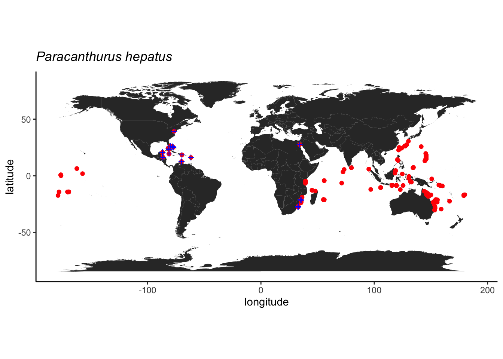

Atividade 3
3.1 Acesso a bancos de dados abertos
O acesso pode ser feito de diferentes formas, seja diretamente no website do repositório, utilizando-se pacotes específicos que acessam os repositórios via R ou Python, ou através de API (Application Programming Interface). Nesta última opção, o repositório é acessado por outro aplicativo ou serviço web para automatização de tarefas, seja em servidor local ou remoto, mas requer conhecimento de programação em Java e outras linguagens e não será tratado aqui.
Nesta atividade, temos como objetivo acessar um repositório de dados de ocorrência de espécies, inspecionar os dados, avaliar sua qualidade e fazer um mapa com as ocorrências.
Para iniciar, vamos escolher um repositório e uma espécie de interesse. Vamos iniciar com uma única espécie para facilitar as demais etapas.
O GBIF (Global Biodiversity Information Facility) é o maior repositório de ocorrências da biodiversidade da atualidade, então será nossa opção de repositório. No entanto, o OBIS (Ocean Biodiversity Information System) é um repositório dedicado às espécies marinhas e espelhado no GBIF. Assim, espera-se que algumas ocorrências sejam duplicadas nos dois repositórios.
3.1.1 Exemplo: Finding Dori
A espécie-alvo será o peixe marinho Paracanthurus hepatus, também conhecido como Blue Tang e, mais recentemente como Dori!.

Nosso primeiro exemplor será com as ocorrencias do GBIF e, para tal, vamos utilizar o pacote rgbif.
3.1.2 GBIF
Vamos fazer uso do pacote tidyverse para manipular dos dados, então vamos carregar este pacote e o rgbif.
É importante explorar as funções do pacote e pode-se fazer isto usando o comando ?rgbif e, para ler sobre uma função em particular basta colocar ? em frente ao nome da função. Se o pacote não estiver carregado ou instalada é preciso usar ??.
A função occ_data faz uma busca simplificada das ocorrências no repositório do GBIF por meio do nome científico, número de identificação, país e outros. Neste caso, vamos procurar diretamente pelo nome da espécie-alvo. Outros atributos podem ser adicionados à função para refinar a busca, leia o material de ajuda da função para ter uma ideia. Vamos aproveitar alguns destes atributos e selecionar apenas ocorrências que possuem coordenadas e sem problemas geoespaciais.
# checar funcoes
?occ_data
# baixar ocorrencias
dori_gbif <- occ_data(scientificName = "Paracanthurus hepatus",
hasCoordinate = TRUE,
hasGeospatialIssue=FALSE)
# dimensoes
dim(dori_gbif)## NULLdim(dori_gbif$data)## [1] 500 150# checar campos
dori_gbif$data %>% names## [1] "key"
## [2] "scientificName"
## [3] "decimalLatitude"
## [4] "decimalLongitude"
## [5] "issues"
## [6] "datasetKey"
## [7] "publishingOrgKey"
## [8] "installationKey"
## [9] "publishingCountry"
## [10] "protocol"
## [11] "lastCrawled"
## [12] "lastParsed"
## [13] "crawlId"
## [14] "hostingOrganizationKey"
## [15] "basisOfRecord"
## [16] "occurrenceStatus"
## [17] "taxonKey"
## [18] "kingdomKey"
## [19] "phylumKey"
## [20] "classKey"
## [21] "orderKey"
## [22] "familyKey"
## [23] "genusKey"
## [24] "speciesKey"
## [25] "acceptedTaxonKey"
## [26] "acceptedScientificName"
## [27] "kingdom"
## [28] "phylum"
## [29] "order"
## [30] "family"
## [31] "genus"
## [32] "species"
## [33] "genericName"
## [34] "specificEpithet"
## [35] "taxonRank"
## [36] "taxonomicStatus"
## [37] "iucnRedListCategory"
## [38] "dateIdentified"
## [39] "coordinateUncertaintyInMeters"
## [40] "stateProvince"
## [41] "year"
## [42] "month"
## [43] "day"
## [44] "eventDate"
## [45] "modified"
## [46] "lastInterpreted"
## [47] "references"
## [48] "license"
## [49] "isInCluster"
## [50] "geodeticDatum"
## [51] "class"
## [52] "countryCode"
## [53] "country"
## [54] "rightsHolder"
## [55] "identifier"
## [56] "http://unknown.org/nick"
## [57] "verbatimEventDate"
## [58] "datasetName"
## [59] "verbatimLocality"
## [60] "collectionCode"
## [61] "gbifID"
## [62] "occurrenceID"
## [63] "taxonID"
## [64] "recordedBy"
## [65] "catalogNumber"
## [66] "http://unknown.org/occurrenceDetails"
## [67] "institutionCode"
## [68] "rights"
## [69] "eventTime"
## [70] "identifiedBy"
## [71] "identificationID"
## [72] "occurrenceRemarks"
## [73] "lifeStage"
## [74] "networkKeys"
## [75] "institutionKey"
## [76] "eventID"
## [77] "dataGeneralizations"
## [78] "vernacularName"
## [79] "otherCatalogNumbers"
## [80] "locationRemarks"
## [81] "taxonConceptID"
## [82] "depth"
## [83] "footprintWKT"
## [84] "county"
## [85] "identificationVerificationStatus"
## [86] "originalNameUsage"
## [87] "datasetID"
## [88] "nameAccordingTo"
## [89] "higherGeography"
## [90] "locality"
## [91] "language"
## [92] "type"
## [93] "higherClassification"
## [94] "individualCount"
## [95] "depthAccuracy"
## [96] "waterBody"
## [97] "sampleSizeUnit"
## [98] "sampleSizeValue"
## [99] "habitat"
## [100] "institutionID"
## [101] "islandGroup"
## [102] "http://rs.tdwg.org/dwc/terms/sampleSizeValue"
## [103] "georeferencedBy"
## [104] "maximumDistanceAboveSurfaceInMeters"
## [105] "georeferenceProtocol"
## [106] "island"
## [107] "verbatimDepth"
## [108] "http://rs.tdwg.org/dwc/terms/sampleSizeUnit"
## [109] "ownerInstitutionCode"
## [110] "samplingProtocol"
## [111] "elevation"
## [112] "elevationAccuracy"
## [113] "georeferenceSources"
## [114] "projectId"
## [115] "programmeAcronym"
## [116] "continent"
## [117] "organismQuantity"
## [118] "organismQuantityType"
## [119] "http://rs.tdwg.org/dwc/terms/organismQuantity"
## [120] "endDayOfYear"
## [121] "locationAccordingTo"
## [122] "startDayOfYear"
## [123] "http://rs.tdwg.org/dwc/terms/organismQuantityType"
## [124] "associatedReferences"
## [125] "recordNumber"
## [126] "collectionKey"
## [127] "fieldNumber"
## [128] "preparations"
## [129] "http://unknown.org/language"
## [130] "http://unknown.org/rights"
## [131] "http://unknown.org/rightsHolder"
## [132] "identificationRemarks"
## [133] "materialSampleID"
## [134] "disposition"
## [135] "municipality"
## [136] "collectionID"
## [137] "eventRemarks"
## [138] "locationID"
## [139] "bibliographicCitation"
## [140] "nomenclaturalCode"
## [141] "name"
## [142] "parentEventID"
## [143] "samplingEffort"
## [144] "coordinatePrecision"
## [145] "acceptedNameUsage"
## [146] "georeferenceVerificationStatus"
## [147] "previousIdentifications"
## [148] "acceptedNameUsageID"
## [149] "associatedSequences"
## [150] "organismID"Acima, vemos que o conjunto de dados tem ocorrências (uma por linha) e variáveis. As variáveis podem ser utilizadas para filtrar as ocorrências de acordo com o objetivo, além de fornecerem diversos dados a respeito das ocorrências, incluindo dados dos amostradores e detentores dos direitos. Vale notar que o conjunto de dados retornado pelo GBIF não é um data frame simples, mas sim um list que contém um conjunto de data frames. Para acessar estes data frames é necessário usar o operador $.
3.2 Problemas reportados
Um dos campos mais úteis dos dados é a coluna issues, pois ela indica problema já identificados pelo validador automático do repositório. Os problemas (issues) possuem um código que pode ser conferido pela função gbif_issues. Ao usar a função não é preciso indicar nenhum atributo, pois ela retornará um dataframe com as abreviações usadas e a descrição dos problemas catalogados no GBIF.
## code issue
## 1 bri BASIS_OF_RECORD_INVALID
## 2 ccm CONTINENT_COUNTRY_MISMATCH
## 3 cdc CONTINENT_DERIVED_FROM_COORDINATES
## 4 conti CONTINENT_INVALID
## 5 cdiv COORDINATE_INVALID
## 6 cdout COORDINATE_OUT_OF_RANGE
## 7 cdrep COORDINATE_REPROJECTED
## 8 cdrepf COORDINATE_REPROJECTION_FAILED
## 9 cdreps COORDINATE_REPROJECTION_SUSPICIOUS
## 10 cdround COORDINATE_ROUNDED
## 11 cucdmis COUNTRY_COORDINATE_MISMATCH
## 12 cudc COUNTRY_DERIVED_FROM_COORDINATES
## 13 cuiv COUNTRY_INVALID
## 14 cum COUNTRY_MISMATCH
## 15 depmms DEPTH_MIN_MAX_SWAPPED
## 16 depnn DEPTH_NON_NUMERIC
## 17 depnmet DEPTH_NOT_METRIC
## 18 depunl DEPTH_UNLIKELY
## 19 elmms ELEVATION_MIN_MAX_SWAPPED
## 20 elnn ELEVATION_NON_NUMERIC
## 21 elnmet ELEVATION_NOT_METRIC
## 22 elunl ELEVATION_UNLIKELY
## 23 gass84 GEODETIC_DATUM_ASSUMED_WGS84
## 24 gdativ GEODETIC_DATUM_INVALID
## 25 iddativ IDENTIFIED_DATE_INVALID
## 26 iddatunl IDENTIFIED_DATE_UNLIKELY
## 27 mdativ MODIFIED_DATE_INVALID
## 28 mdatunl MODIFIED_DATE_UNLIKELY
## 29 muldativ MULTIMEDIA_DATE_INVALID
## 30 muluriiv MULTIMEDIA_URI_INVALID
## 31 preneglat PRESUMED_NEGATED_LATITUDE
## 32 preneglon PRESUMED_NEGATED_LONGITUDE
## 33 preswcd PRESUMED_SWAPPED_COORDINATE
## 34 rdativ RECORDED_DATE_INVALID
## 35 rdatm RECORDED_DATE_MISMATCH
## 36 rdatunl RECORDED_DATE_UNLIKELY
## 37 refuriiv REFERENCES_URI_INVALID
## 38 txmatfuz TAXON_MATCH_FUZZY
## 39 txmathi TAXON_MATCH_HIGHERRANK
## 40 txmatnon TAXON_MATCH_NONE
## 41 typstativ TYPE_STATUS_INVALID
## 42 zerocd ZERO_COORDINATE
## 43 cdpi COORDINATE_PRECISION_INVALID
## 44 cdumi COORDINATE_UNCERTAINTY_METERS_INVALID
## 45 indci INDIVIDUAL_COUNT_INVALID
## 46 interr INTERPRETATION_ERROR
## 47 iccos INDIVIDUAL_COUNT_CONFLICTS_WITH_OCCURRENCE_STATUS
## 48 osiic OCCURRENCE_STATUS_INFERRED_FROM_INDIVIDUAL_COUNT
## 49 osu OCCURRENCE_STATUS_UNPARSABLE
## 50 geodi GEOREFERENCED_DATE_INVALID
## 51 geodu GEOREFERENCED_DATE_UNLIKELY
## 52 ambcol AMBIGUOUS_COLLECTION
## 53 ambinst AMBIGUOUS_INSTITUTION
## 54 colmafu COLLECTION_MATCH_FUZZY
## 55 colmano COLLECTION_MATCH_NONE
## 56 incomis INSTITUTION_COLLECTION_MISMATCH
## 57 inmafu INSTITUTION_MATCH_FUZZY
## 58 inmano INSTITUTION_MATCH_NONE
## 59 osifbor OCCURRENCE_STATUS_INFERRED_FROM_BASIS_OF_RECORD
## 60 diffown DIFFERENT_OWNER_INSTITUTION
## 61 taxmatagg TAXON_MATCH_AGGREGATE
## 62 anm ACCEPTED_NAME_MISSING
## 63 annu ACCEPTED_NAME_NOT_UNIQUE
## 64 anuidi ACCEPTED_NAME_USAGE_ID_INVALID
## 65 aitidinv ALT_IDENTIFIER_INVALID
## 66 bbmn BACKBONE_MATCH_NONE
## 67 basauthm BASIONYM_AUTHOR_MISMATCH
## 68 bibrinv BIB_REFERENCE_INVALID
## 69 chsun CHAINED_SYNOYM
## 70 clasna CLASSIFICATION_NOT_APPLIED
## 71 clasroi CLASSIFICATION_RANK_ORDER_INVALID
## 72 conbascomb CONFLICTING_BASIONYM_COMBINATION
## 73 desinv DESCRIPTION_INVALID
## 74 disinv DISTRIBUTION_INVALID
## 75 hom HOMONYM
## 76 minv MULTIMEDIA_INVALID
## 77 npm NAME_PARENT_MISMATCH
## 78 ns NO_SPECIES
## 79 nsinv NOMENCLATURAL_STATUS_INVALID
## 80 onder ORIGINAL_NAME_DERIVED
## 81 onnu ORIGINAL_NAME_NOT_UNIQUE
## 82 onuidinv ORIGINAL_NAME_USAGE_ID_INVALID
## 83 ov ORTHOGRAPHIC_VARIANT
## 84 pc PARENT_CYCLE
## 85 pnnu PARENT_NAME_NOT_UNIQUE
## 86 pnuidinv PARENT_NAME_USAGE_ID_INVALID
## 87 pp PARTIALLY_PARSABLE
## 88 pbg PUBLISHED_BEFORE_GENUS
## 89 rankinv RANK_INVALID
## 90 relmiss RELATIONSHIP_MISSING
## 91 scina SCIENTIFIC_NAME_ASSEMBLED
## 92 spprinv SPECIES_PROFILE_INVALID
## 93 taxstinv TAXONOMIC_STATUS_INVALID
## 94 taxstmis TAXONOMIC_STATUS_MISMATCH
## 95 unpars UNPARSABLE
## 96 vernnameinv VERNACULAR_NAME_INVALID
## 97 backmatagg BACKBONE_MATCH_AGGREGATE
## description
## 1 The given basis of record is impossible to interpret or seriously different from the recommended vocabulary.
## 2 The interpreted continent and country do not match up.
## 3 The interpreted continent is based on the coordinates, not the verbatim string information.
## 4 Uninterpretable continent values found.
## 5 Coordinate value given in some form but GBIF is unable to interpret it.
## 6 Coordinate has invalid lat/lon values out of their decimal max range.
## 7 The original coordinate was successfully reprojected from a different geodetic datum to WGS84.
## 8 The given decimal latitude and longitude could not be reprojected to WGS84 based on the provided datum.
## 9 Indicates successful coordinate reprojection according to provided datum, but which results in a datum shift larger than 0.1 decimal degrees.
## 10 Original coordinate modified by rounding to 5 decimals.
## 11 The interpreted occurrence coordinates fall outside of the indicated country.
## 12 The interpreted country is based on the coordinates, not the verbatim string information.
## 13 Uninterpretable country values found.
## 14 Interpreted country for dwc:country and dwc:countryCode contradict each other.
## 15 Set if supplied min>max
## 16 Set if depth is a non numeric value
## 17 Set if supplied depth is not given in the metric system, for example using feet instead of meters
## 18 Set if depth is larger than 11.000m or negative.
## 19 Set if supplied min > max elevation
## 20 Set if elevation is a non numeric value
## 21 Set if supplied elevation is not given in the metric system, for example using feet instead of meters
## 22 Set if elevation is above the troposphere (17km) or below 11km (Mariana Trench).
## 23 Indicating that the interpreted coordinates assume they are based on WGS84 datum as the datum was either not indicated or interpretable.
## 24 The geodetic datum given could not be interpreted.
## 25 The date given for dwc:dateIdentified is invalid and cant be interpreted at all.
## 26 The date given for dwc:dateIdentified is in the future or before Linnean times (1700).
## 27 A (partial) invalid date is given for dc:modified, such as a non existing date, invalid zero month, etc.
## 28 The date given for dc:modified is in the future or predates unix time (1970).
## 29 An invalid date is given for dc:created of a multimedia object.
## 30 An invalid uri is given for a multimedia object.
## 31 Latitude appears to be negated, e.g. 32.3 instead of -32.3
## 32 Longitude appears to be negated, e.g. 32.3 instead of -32.3
## 33 Latitude and longitude appear to be swapped.
## 34 A (partial) invalid date is given, such as a non existing date, invalid zero month, etc.
## 35 The recording date specified as the eventDate string and the individual year, month, day are contradicting.
## 36 The recording date is highly unlikely, falling either into the future or represents a very old date before 1600 that predates modern taxonomy.
## 37 An invalid uri is given for dc:references.
## 38 Matching to the taxonomic backbone can only be done using a fuzzy, non exact match.
## 39 Matching to the taxonomic backbone can only be done on a higher rank and not the scientific name.
## 40 Matching to the taxonomic backbone cannot be done cause there was no match at all or several matches with too little information to keep them apart (homonyms).
## 41 The given type status is impossible to interpret or seriously different from the recommended vocabulary.
## 42 Coordinate is the exact 0/0 coordinate, often indicating a bad null coordinate.
## 43 Indicates an invalid or very unlikely coordinatePrecision
## 44 Indicates an invalid or very unlikely dwc:uncertaintyInMeters.
## 45 Individual count value not parsable into an integer.
## 46 An error occurred during interpretation, leaving the record interpretation incomplete.
## 47 Example: individual count value > 0, but occurrence status is absent and etc.
## 48 Occurrence status was inferred from the individual count value
## 49 Occurrence status value can't be assigned to OccurrenceStatus
## 50 The date given for dwc:georeferencedDate is invalid and can't be interpreted at all.
## 51 The date given for dwc:georeferencedDate is in the future or before Linnean times (1700).
## 52 The given collection matches with more than 1 GrSciColl collection.
## 53 The given institution matches with more than 1 GrSciColl institution.
## 54 The given collection was fuzzily matched to a GrSciColl collection.
## 55 The given collection couldn't be matched with any GrSciColl collection.
## 56 The collection matched doesn't belong to the institution matched.
## 57 The given institution was fuzzily matched to a GrSciColl institution.
## 58 The given institution couldn't be matched with any GrSciColl institution.
## 59 Occurrence status was inferred from basis of records
## 60 The given owner institution is different than the given institution. Therefore we assume it doesn't belong to the institution and we don't link it to the occurrence.
## 61 Matching to the taxonomic backbone can only be done on a species level, but the occurrence was in fact considered a broader species aggregate/complex.
## 62 Synonym lacking an accepted name.
## 63 Synonym has a verbatim accepted name which is not unique and refers to several records.
## 64 The value for dwc:acceptedNameUsageID could not be resolved.
## 65 At least one alternative identifier extension record attached to this name usage is invalid.
## 66 Name usage could not be matched to the GBIF backbone.
## 67 The authorship of the original name does not match the authorship in brackets of the actual name.
## 68 At least one bibliographic reference extension record attached to this name usage is invalid.
## 69 If a synonym points to another synonym as its accepted taxon the chain is resolved.
## 70 The denormalized classification could not be applied to the name usage.
## 71 The given ranks of the names in the classification hierarchy do not follow the hierarchy of ranks.
## 72 There have been more than one accepted name in a homotypical basionym group of names.
## 73 At least one description extension record attached to this name usage is invalid.
## 74 At least one distribution extension record attached to this name usage is invalid.
## 75 A not synonymized homonym exists for this name in some other backbone source which have been ignored at build time.
## 76 At least one multimedia extension record attached to this name usage is invalid.
## 77 The (accepted) bi/trinomial name does not match the parent name and should be recombined into the parent genus/species.
## 78 The group (currently only genera are tested) are lacking any accepted species GBIF backbone specific issue.
## 79 dwc:nomenclaturalStatus could not be interpreted
## 80 Record has a original name (basionym) relationship which was derived from name & authorship comparison, but did not exist explicitly in the data.
## 81 Record has a verbatim original name (basionym) which is not unique and refers to several records.
## 82 The value for dwc:originalNameUsageID could not be resolved.
## 83 A potential orthographic variant exists in the backbone.
## 84 The child parent classification resulted into a cycle that needed to be resolved/cut.
## 85 Record has a verbatim parent name which is not unique and refers to several records.
## 86 The value for dwc:parentNameUsageID could not be resolved.
## 87 The beginning of the scientific name string was parsed, but there is additional information in the string that was not understood.
## 88 A bi/trinomial name published earlier than the parent genus was published.
## 89 dwc:taxonRank could not be interpreted
## 90 There were problems representing all name usage relationships, i.e.
## 91 The scientific name was assembled from the individual name parts and not given as a whole string.
## 92 At least one species profile extension record attached to this name usage is invalid.
## 93 dwc:taxonomicStatus could not be interpreted
## 94 no description
## 95 The scientific name string could not be parsed at all, but appears to be a parsable name type, i.e.
## 96 At least one vernacular name extension record attached to this name usage is invalid.
## 97 Name usage could only be matched to a GBIF backbone species, but was in fact a broader species aggregate/complex.
## type
## 1 occurrence
## 2 occurrence
## 3 occurrence
## 4 occurrence
## 5 occurrence
## 6 occurrence
## 7 occurrence
## 8 occurrence
## 9 occurrence
## 10 occurrence
## 11 occurrence
## 12 occurrence
## 13 occurrence
## 14 occurrence
## 15 occurrence
## 16 occurrence
## 17 occurrence
## 18 occurrence
## 19 occurrence
## 20 occurrence
## 21 occurrence
## 22 occurrence
## 23 occurrence
## 24 occurrence
## 25 occurrence
## 26 occurrence
## 27 occurrence
## 28 occurrence
## 29 occurrence
## 30 occurrence
## 31 occurrence
## 32 occurrence
## 33 occurrence
## 34 occurrence
## 35 occurrence
## 36 occurrence
## 37 occurrence
## 38 occurrence
## 39 occurrence
## 40 occurrence
## 41 occurrence
## 42 occurrence
## 43 occurrence
## 44 occurrence
## 45 occurrence
## 46 occurrence
## 47 occurrence
## 48 occurrence
## 49 occurrence
## 50 occurrence
## 51 occurrence
## 52 occurrence
## 53 occurrence
## 54 occurrence
## 55 occurrence
## 56 occurrence
## 57 occurrence
## 58 occurrence
## 59 occurrence
## 60 occurrence
## 61 occurrence
## 62 name
## 63 name
## 64 name
## 65 name
## 66 name
## 67 name
## 68 name
## 69 name
## 70 name
## 71 name
## 72 name
## 73 name
## 74 name
## 75 name
## 76 name
## 77 name
## 78 name
## 79 name
## 80 name
## 81 name
## 82 name
## 83 name
## 84 name
## 85 name
## 86 name
## 87 name
## 88 name
## 89 name
## 90 name
## 91 name
## 92 name
## 93 name
## 94 name
## 95 name
## 96 name
## 97 namePara checar os issues indicados na base baixada é necessário um pequeno tratamento, uma vez que algumas ocorrências possuem múltiplos problemas. Assim, utilizamos a função strsplit para individualizar os issues e poder conferí-los.
## code issue
## 1 conti CONTINENT_INVALID
## 2 cdreps COORDINATE_REPROJECTION_SUSPICIOUS
## 3 cdround COORDINATE_ROUNDED
## 4 cudc COUNTRY_DERIVED_FROM_COORDINATES
## 5 cum COUNTRY_MISMATCH
## 6 gass84 GEODETIC_DATUM_ASSUMED_WGS84
## 7 gdativ GEODETIC_DATUM_INVALID
## 8 refuriiv REFERENCES_URI_INVALID
## 9 osiic OCCURRENCE_STATUS_INFERRED_FROM_INDIVIDUAL_COUNT
## 10 colmafu COLLECTION_MATCH_FUZZY
## 11 incomis INSTITUTION_COLLECTION_MISMATCH
## 12 inmafu INSTITUTION_MATCH_FUZZY
## description
## 1 Uninterpretable continent values found.
## 2 Indicates successful coordinate reprojection according to provided datum, but which results in a datum shift larger than 0.1 decimal degrees.
## 3 Original coordinate modified by rounding to 5 decimals.
## 4 The interpreted country is based on the coordinates, not the verbatim string information.
## 5 Interpreted country for dwc:country and dwc:countryCode contradict each other.
## 6 Indicating that the interpreted coordinates assume they are based on WGS84 datum as the datum was either not indicated or interpretable.
## 7 The geodetic datum given could not be interpreted.
## 8 An invalid uri is given for dc:references.
## 9 Occurrence status was inferred from the individual count value
## 10 The given collection was fuzzily matched to a GrSciColl collection.
## 11 The collection matched doesn't belong to the institution matched.
## 12 The given institution was fuzzily matched to a GrSciColl institution.
## type
## 1 occurrence
## 2 occurrence
## 3 occurrence
## 4 occurrence
## 5 occurrence
## 6 occurrence
## 7 occurrence
## 8 occurrence
## 9 occurrence
## 10 occurrence
## 11 occurrence
## 12 occurrenceA maioria dos problemas reportados é relacionado com discrepancias entre informações indicadas pelos autores e as levantadas pelo algoritmo de checagem, mas nenhum parece invalidar as ocorrências, por enquanto.
Prosseguimos selecionando algumas variáveis que serão úteis para a validação dos dados e futuras análises, como coordenadas, profundidade, nome da base de dados etc.
dori_gbif1 <- dori_gbif$data %>%
dplyr::select(scientificName, acceptedScientificName, decimalLatitude, decimalLongitude,
issues, waterBody, basisOfRecord, occurrenceStatus, rightsHolder,
datasetName, recordedBy, depth, locality, habitat) Note que temos 500 ocorrências, no entanto, vamos ver quantas são únicas aplicando a função distinct do pacote dplyr.
dori_gbif1 <- dori_gbif1 %>%
distinct() No fim, observamos que ficamos com 376 ocorrências agora, e isso acontece por causa de diferenças em colunas que, neste caso, não serão usadas para o objetivo desta prática.
Para identificar todos os valores únicos presented nos dados, vamos aplicar a função unique a cada coluna com um loop na função lapply.
# checar niveis dos fatores
lapply(dori_gbif1, unique)## $scientificName
## [1] "Paracanthurus hepatus (Linnaeus, 1766)" "BOLD:AAC3227"
## [3] "BOLD:AAT9935"
##
## $acceptedScientificName
## [1] "Paracanthurus hepatus (Linnaeus, 1766)" "BOLD:AAC3227"
## [3] "BOLD:AAT9935"
##
## $decimalLatitude
## [1] -27.400000 -28.611278 -4.656524 -17.636875 25.015492 -6.353158 4.595825 -18.287067 -13.647350
## [10] -8.349668 22.680278 -28.196141 26.189035 -21.058230 -2.244373 -8.727807 -2.204717 -30.204320
## [19] -24.113638 15.022028 -5.816751 -5.840112 27.388889 -24.116345 -17.076469 -17.077753 -10.423094
## [28] -29.927833 -10.393100 -8.481814 -8.612647 1.615687 13.522638 13.518570 4.116129 0.186880
## [37] 0.798243 -28.611023 6.384268 -16.428461 27.328333 -4.714799 -16.767523 4.109330 -21.151370
## [46] -23.817600 -29.929429 -4.279653 -24.110377 -0.584608 -17.575953 14.865178 14.838945 13.282353
## [55] 18.169705 18.090721 18.144987 14.108882 14.169204 15.274841 15.052066 14.927633 15.010917
## [64] 15.192456 14.924998 -27.535837 18.093946 18.050178 18.085108 15.134210 15.111052 15.113834
## [73] 16.718400 25.752000 -2.757490 13.686601 -5.820478 4.121438 -21.170370 -21.205960 -21.205150
## [82] -21.035070 -21.233100 -21.073840 -21.239710 -2.260250 -2.249608 -14.273857 -17.076470 -16.783458
## [91] -21.349500 -21.484390 -16.657679 -25.288066 30.487778 -8.400000 -21.319020 24.306446 -4.321165
## [100] -17.068420 -8.689442 -14.235900 -21.366690 -21.371320 -21.370350 26.291180 1.872135 0.187242
## [109] 0.190310 0.191557 0.822466 0.820899 -17.116486 -17.070283 -17.062497 -14.151863 -14.224068
## [118] -14.278573 -14.279030 -14.241373 -14.285210 -14.273254 16.135100 -21.660010 -21.991250 6.382461
## [127] -27.532000 24.436835 -5.611260 -27.525900 -15.484300 -8.537167 -8.475600 -4.530000 -5.304400
## [136] 24.472500 -12.872840 23.212100 -12.672960 -4.714922 -21.015540 -21.015000 6.986900 7.134422
## [145] -27.520850 -27.523100 -17.408093 14.843660 18.149654 14.201462 15.269845 15.261225 15.275189
## [154] 15.268836 15.256714 15.282955 15.275694 15.116363 14.934944 15.276654 15.281291 15.003307
## [163] -4.292379 -8.636633 17.591924 26.237900 24.455000 -23.322967 -23.890883 -8.349183 -8.277300
## [172] 13.230371 -8.505400 -24.112880 13.522800 -14.529133 -21.160690 -29.447500 -14.681537 -27.529900
## [181] -27.538681 -6.456933 -29.930400 -30.202300 5.550000 18.437700 -23.247900 -21.851700 -21.897300
## [190] -21.248000 -20.976700 -17.827500 -16.931600 -12.217000 27.510000 19.292300 -21.371260 -21.372000
## [199] -21.365210 16.383300 -17.092612 -17.100688 0.194956 0.195480 0.190741 -8.556720 -26.822600
## [208] -6.634620 -8.277000 25.821500 -14.523517 3.352720 39.284700 -27.533300 -27.524900 -12.085451
## [217] -24.111530 19.675859 18.049572 15.110629 16.710502 15.105225 15.091283 14.952465 15.255971
## [226] 14.931544 20.748400 14.864917 14.847157 15.077733 15.069572 15.086594 15.055609 -29.923100
## [235] -30.017600 16.324900 -23.796683 -23.848667 -23.745917 -21.150000 -21.146900 -18.846000 0.206550
## [244] 0.190290 0.193110 -14.652800 -14.652770 -28.611000 -27.413500 -27.413510 -22.498100 25.034300
## [253] -10.429600 -10.428100 2.285408 -4.313293 12.601900 20.307600 5.864600 -29.930440 -30.206662
## [262] 15.273530 15.254217 15.268808 15.004243 5.883700 5.875800 18.811222 17.607530 -29.933100
## [271] -29.912700 -30.201900 -29.912740 -29.933083 -8.277800 16.320100 0.197000 -22.843333 -22.835000
## [280] -13.500000 -22.840000 -30.201700 -30.207000 -30.204300 -29.923140 -30.205030 -30.201670 -30.207010
## [289] -14.651927 7.366017 15.176020 17.586930 -21.060000 -21.059999 -10.446286 -21.349080 0.190850
## [298] 14.246000 14.250000 -27.490000 7.117000 7.120000 -8.945700 -8.179083 -23.883500 -23.886983
##
## $decimalLongitude
## [1] 153.56667 153.62837 39.36794 148.44080 122.00093 39.30729 118.86434 147.69919 144.10688
## [10] 116.06586 121.49028 153.57911 127.40389 55.21915 130.55572 115.54442 130.56772 153.26482
## [19] 152.70748 145.57996 39.38253 39.46530 128.52111 152.70794 179.11049 179.10984 105.66871
## [28] 153.38925 105.66045 119.52971 158.20064 124.73795 120.97290 120.99116 118.63001 -176.46176
## [37] -176.62003 153.62923 -162.46472 145.99662 128.55778 39.37970 179.94055 118.62500 35.08851
## [46] 35.40329 153.39147 55.72781 152.71023 130.63281 178.98593 145.56811 145.53007 144.76383
## [55] 145.79179 145.76129 145.75369 145.16840 145.28545 145.79259 145.65608 145.63037 145.58553
## [64] 145.70396 145.64574 32.67988 145.74479 145.70588 145.72653 145.67886 145.70275 145.69897
## [73] 145.77638 141.47400 150.71890 120.91363 39.38162 118.63332 55.27931 55.27962 55.27898
## [82] 55.21433 55.29266 55.22368 55.30145 130.64465 130.62375 -169.49334 179.11049 179.92354
## [91] 55.46860 35.45493 146.02884 152.90847 130.15250 119.35000 35.50786 124.09048 55.86569
## [100] 179.10468 119.57251 -178.17400 55.65609 55.68264 55.73661 126.78845 -157.42781 -176.46102
## [109] -176.45731 -176.48886 -176.62678 -176.62671 179.10813 179.10590 179.09860 -169.61060 -169.51954
## [118] -170.54882 -170.54739 -170.67885 -170.54548 -170.50510 -61.77100 35.42359 35.38154 -162.42674
## [127] 32.68670 123.79669 132.74726 32.68540 147.10760 119.60195 119.55653 131.65190 131.99690
## [136] 122.96361 45.27593 -81.18580 45.05137 39.37488 55.23410 55.23405 134.21884 134.22094
## [145] 32.68732 32.68600 -179.05644 145.56591 145.81155 145.26090 145.78511 145.82889 145.82971
## [154] 145.83191 145.81463 145.80272 145.79354 145.69629 145.65172 145.82731 145.80069 145.67423
## [163] 55.86796 119.71143 145.81372 -80.00000 -81.85830 151.98242 152.43017 116.05110 115.59450
## [172] 144.64386 157.99209 152.71402 120.99300 145.58833 55.83662 159.05390 145.43811 32.68800
## [181] 32.67879 71.25228 153.38980 153.26580 73.45000 -69.69920 155.56720 153.52120 153.53760
## [190] 155.76360 154.34530 148.50350 149.99040 123.00390 34.18600 -81.10510 55.54613 55.54547
## [199] 55.53040 -86.40000 179.09921 179.12516 -176.48664 -176.48669 -176.48881 125.50000 32.88350
## [208] 39.23600 115.59400 -77.93170 145.58198 72.43150 -76.60830 32.68090 32.68440 96.87765
## [217] 152.71830 145.40914 145.70552 145.70190 145.76719 145.72023 145.75022 145.61942 145.72341
## [226] 145.63004 -86.88900 145.58005 145.56905 145.65842 145.65610 145.65793 145.59721 153.38810
## [235] 153.26920 -86.57990 152.30293 152.38175 152.28250 55.83000 55.82176 36.32800 -176.47949
## [244] -176.45685 -176.45694 145.45050 153.62830 153.52520 153.62831 153.52519 166.44206 -77.39630
## [253] 105.66810 105.66580 118.24362 55.86585 -70.05770 -87.01840 95.26880 153.38984 153.26605
## [262] 145.79122 145.75177 145.83218 145.58672 95.25900 95.25970 145.67677 145.81530 153.39260
## [271] 153.38340 153.26760 153.38342 153.39256 115.59460 -86.64170 -176.48620 35.55833 35.55100
## [280] 47.95000 35.55000 47.95000 153.26640 153.26530 153.26480 153.38809 153.26635 153.26527
## [289] 145.45101 134.61270 145.78762 145.81808 55.22000 55.22000 105.57552 55.46472 -176.48893
## [298] 120.47900 120.47900 120.48000 32.70000 79.80800 79.80800 79.81000 160.07777 156.98395
## [307] 152.41978 152.42750
##
## $issues
## [1] "cdround" "cudc"
## [3] "cdround,cudc" "incomis,inmafu"
## [5] "" "cum,gass84"
## [7] "cdround,gass84,incomis,inmafu" "cudc,gass84,gdativ,refuriiv"
## [9] "cdreps" "osiic"
## [11] "cdround,gass84" "gass84,incomis,inmafu"
## [13] "gass84,osiic,colmafu" "gass84"
## [15] "cdround,cudc,gass84,gdativ,refuriiv" "conti,cdround,gass84,osiic,inmafu"
## [17] "cudc,gass84,osiic"
##
## $waterBody
## [1] NA "North Pacific Ocean"
## [3] "Celebes Sea" "South Pacific Ocean"
## [5] "Flores Sea" "Pacific"
## [7] "Caribbean Sea" "Gulf of Mexico"
## [9] "Atlantic Ocean" "Verde Island"
## [11] "La Caleta" "Red Sea"
## [13] "Carribean" "Banda Sea"
## [15] "Indian Ocean" "IndianOcean"
## [17] "Laut Bali" "Royal Caribbean"
## [19] "Laccadive Sea" "Baltimore, MD"
## [21] "Carribean Sea" "South China and Eastern Archipelagic Seas"
##
## $basisOfRecord
## [1] "HUMAN_OBSERVATION" "PRESERVED_SPECIMEN" "MATERIAL_SAMPLE"
##
## $occurrenceStatus
## [1] "PRESENT"
##
## $rightsHolder
## [1] "Nigel Marsh" "Michal" "Wasini Tour Guide" "John Sear"
## [5] "顏水蛭" "Victor HOYEAU" "Daniela Kupschus" "Sophie Duc"
## [9] "tracc" NA "Jacek Pietruszewski" "calvin1976"
## [13] "joseph_dibattista" "kfa" "desertnaturalist" "Matthew Bokach"
## [17] "Josh Moloney" "Peter" "Zack" "GF"
## [21] "Chen Zhi" "warrencameron" "Mark Rosenstein" "hokoonwong"
## [25] "Robin Laws-Wall" "blackdogto" "craigjhowe" "Lesley Clements"
## [29] "Adelma Hills" "Albert Kang" "Roxanne Lazarus" "Cameron"
## [33] "mwamlavya" "Diveboard" "Ian Shaw" "Geoff Shuetrim"
## [37] "nahpets" "Mathew" "Tony Strazzari" "Francesco Ricciardi"
## [41] "Joachim Louis" "João D'Andretta" "bja2800dk" "Michael Long"
## [45] "Geir Drange" "David R" "Christian Doedt" "Carmelo López Abad"
## [49] "cindyjay" "RLS" "Ewout Knoester" "Paolo Mazzei"
## [53] "rowanwattpringle" "jeyre" "brudermann" "Karen Willshaw"
## [57] "ninjawil" "gernotkunz" "Richard Ling" "SAIAB"
## [61] "sea-kangaroo" "tony rebelo"
##
## $datasetName
## [1] "iNaturalist research-grade observations"
## [2] NA
## [3] "NOAA Pacific Islands Fisheries Science Center, Ecosystem Sciences Division, National Coral Reef Monitoring Program: Stratified random surveys (StRS) of reef fish in the U.S. Pacific Islands"
## [4] "Diveboard - Scuba diving citizen science"
## [5] "Instituto Nacional de Investigação Pesqueira"
## [6] "NMNH Extant Biology"
## [7] "NOAA Pacific Islands Fisheries Science Center, Ecosystem Science Division Coral Reef Ecosystem Program, Rapid Ecological Assessments of Fish Belt Transect Surveys (BLT) at Coral Reef Sites across the Pacific Ocean from 2000 to 2009"
## [8] "Ocean Genome Legacy Collection"
##
## $recordedBy
## [1] "Nigel Marsh"
## [2] "Michal"
## [3] "Wasini Tour Guide"
## [4] "John Sear"
## [5] "顏水蛭"
## [6] "Victor HOYEAU"
## [7] "Daniela Kupschus"
## [8] "Sophie Duc"
## [9] "tracc"
## [10] NA
## [11] "Jacek Pietruszewski"
## [12] "calvin1976"
## [13] "joseph_dibattista"
## [14] "kfa"
## [15] "Bernard Ludwig, Sophie Porcheron, Lucie Ludwig (CSAL)"
## [16] "desertnaturalist"
## [17] "Matthew Bokach"
## [18] "Josh Moloney"
## [19] "Peter"
## [20] "Zack"
## [21] "GF"
## [22] "Chen Zhi"
## [23] "warrencameron"
## [24] "Mark Rosenstein"
## [25] "hokoonwong"
## [26] "Robin Laws-Wall"
## [27] "blackdogto"
## [28] "craigjhowe"
## [29] "Lesley Clements"
## [30] "Adelma Hills"
## [31] "Albert Kang"
## [32] "Diver initials CC"
## [33] "Diver initials TCW"
## [34] "Diver initials LMG"
## [35] "Roxanne Lazarus"
## [36] "Diver initials JWM"
## [37] "Cameron"
## [38] "mwamlavya"
## [39] "Thomas Chardon"
## [40] "Simão Elias Mupengo"
## [41] "Açúrcio Belmiro Cumbane"
## [42] "Ian Shaw"
## [43] "539637721"
## [44] "Geoff Shuetrim"
## [45] "nahpets"
## [46] "Diver initials VAB"
## [47] "Diver initials PMA"
## [48] "Diver initials RMW"
## [49] "Diver initials JPZ"
## [50] "Diver initials ARP"
## [51] "Diver initials KDG"
## [52] "Mathew"
## [53] "Tony Strazzari"
## [54] "Francesco Ricciardi"
## [55] "Joachim Louis"
## [56] "João D'Andretta"
## [57] "Nicet J.B., Pinault M.,Wickel J., Bigot L.,C. Bourmaud,Mulochau T., Zubia M., Conand C., Poupin,M. Schleyer,Benon P., G. Malfait"
## [58] "|RNMR, IRD, université de La Réunion"
## [59] "Rangel de Jesus"
## [60] "bja2800dk"
## [61] "xavier, tristan (haustral plongée)"
## [62] "Jorge Fichane Zibane"
## [63] "Michael Long"
## [64] "Kenneth Foster"
## [65] "Sebastien Rezzonico"
## [66] "Herculano Patricio"
## [67] "Isaias Jeckson Elija"
## [68] "Geir Drange"
## [69] "J. Williams & S. Planes"
## [70] "Nicet JB., Pinault M., Wickel J., Bigot L., Mulochau T., Zubia M., Conand C., Poupin J., Barrère A., Quod, J.P., Benon P"
## [71] "David R"
## [72] "Diver initials JMA"
## [73] "Diver initials AEG"
## [74] "Diver initials JMM"
## [75] "Christian Doedt"
## [76] "Diver initials KCL"
## [77] "Diver initials KS"
## [78] "Diver initials EMD"
## [79] "Marie"
## [80] "Gil Zaqueu Maquene"
## [81] "Silva Carlos Mondlane"
## [82] "Diver initials EC"
## [83] "Sam Hansen"
## [84] "Carmelo López Abad"
## [85] "cindyjay"
## [86] "lisa hengelein"
## [87] "JS"
## [88] "JPS"
## [89] "TPC"
## [90] "Maguelone GRATEAU, Henri GRATEAU (ESSOR)"
## [91] "David Bishop"
## [92] "Ewout Knoester"
## [93] "seastung"
## [94] "Pieterjl"
## [95] "angelique tourret (o sea bleu)"
## [96] "Diver initials KSM"
## [97] "Diver initials IDW"
## [98] "Paolo Mazzei"
## [99] "Morgan"
## [100] "Jyore"
## [101] "IVS"
## [102] "Viriato José Mutelecanamba"
## [103] "Christina Estrup"
## [104] "RSS"
## [105] "Anne Hoggett"
## [106] "rowanwattpringle"
## [107] "jeyre"
## [108] "Rowan Watt-Pringle"
## [109] "Gaither, Michelle R.; Wagner, Daniel"
## [110] "NAD"
## [111] "brudermann"
## [112] "Breezy"
## [113] "WCB"
## [114] "GJE"
## [115] "RJE"
## [116] "GER"
## [117] "AJG"
## [118] "Ilya Bychkov"
## [119] "Alf"
## [120] "Sean Shrum"
## [121] "Diver initials MON"
## [122] "Joao Sarmento"
## [123] "Cam"
## [124] "Shiko"
## [125] "Ryan Lee"
## [126] "Haydee Osorio"
## [127] "Steven Lawson"
## [128] "Bruno Amim"
## [129] "Anonymous"
## [130] "Elodie"
## [131] "Sea Escapes"
## [132] "Karen Willshaw"
## [133] "Diver initials SCM"
## [134] "Diver initials MF"
## [135] "Diver initials MKM"
## [136] "INCONNU (Non renseigné)"
## [137] "João Luís Dramane"
## [138] "Diver initials KMO"
## [139] "Diver initials JLG"
## [140] "TJA"
## [141] "AS"
## [142] "eric AMIEL (BioObs)"
## [143] "Rémi Forget"
## [144] "MLD"
## [145] "ninjawil"
## [146] "gernotkunz"
## [147] "Mike"
## [148] "JWG"
## [149] "AR"
## [150] "Richard Ling"
## [151] "TRD"
## [152] "T. Hunter"
## [153] "A.D. Connell"
## [154] "Serge Planes, Nicolas Hubert, Henrich Bruggemann"
## [155] "JRA"
## [156] "MS"
## [157] "Lynda Curtis"
## [158] "Noel Wangunu"
## [159] "sea-kangaroo"
## [160] "Daniel Yanke"
## [161] "tony rebelo"
## [162] "Ribanataake Awira"
##
## $depth
## [1] NA 18.000 20.700 5.450 10.600 20.000 11.745 13.500 16.500 15.400 11.400 23.700 20.600 24.400
## [15] 14.200 24.850 9.700 9.200 8.650 12.800 14.650 12.700 9.300 4.800 20.150 14.550 23.400 21.300
## [29] 21.350 12.250 21.000 16.200 15.600 21.900 22.650 9.100 12.540 8.750 1.250 23.000 19.200 18.950
## [43] 6.850 6.350 15.950 17.800 9.000 8.500 13.000 9.400 9.500 22.200 10.770 9.900 9.600 15.000
## [57] 10.000 22.000 21.950 11.200 21.200 21.500 19.400 5.300 8.800 17.050 11.600 11.000 5.500 7.200
## [71] 21.600 19.500 8.990 5.330 12.000 14.480 6.000 5.000 8.735 9.070 7.000 12.500 8.000 4.900
## [85] 6.095 2.285 25.700 27.000 7.470 19.000 33.000 4.420 8.840 13.715 3.000 1.000 2.000 14.000
## [99] 17.000
##
## $locality
## [1] NA
## [2] "west of Tamina, China, Oshima-gun, Okinoerabu-jima island, Amami Islands, Kagoshima, Japan"
## [3] "off Yakomo, China, Oshima-gun, Okinoerabu-jima island, Amami Islands, Kagoshima, Japan"
## [4] "Hanging Gardens"
## [5] "Govuro Mar Aberto"
## [6] "Jangamo Estuário"
## [7] "Curieuse Island"
## [8] "Japan, Ogasawara Is., Kazan Is. (Volcano Is.), Kita-Iwo-jima I., northeastern coast"
## [9] "Maxixe Estuário"
## [10] "Inhassoro MAI"
## [11] "3 Pulgul St, Urangan QLD 4655, Australia"
## [12] "Urasoko, Kuchierabujima,Yakushima, Kumage-gun, Kuchierabu-jima island, Osumi Islands, Kagoshima, Japan"
## [13] "Crystal Rock, Komodo National Park"
## [14] "Morrumbene Estuário"
## [15] "Inhassoro MAII"
## [16] "Wallis and Futuna, Futuna Island, exposed rocks off north point, exposed rocky reef and channels."
## [17] "Futuna, Wallis and Futuna, Futuna Island, exposed rocks of"
## [18] "Aquarium"
## [19] "Vilankulo MA II"
## [20] "Sodwana Bay, Bikini South"
## [21] "Sodwana Bay, Caves & Overhangs"
## [22] "Bougainville Reef Lagoon East"
## [23] "Pulau Kasiui SW"
## [24] "Kanar Yapas"
## [25] "Umabana, Yonaguni, Yonaguni, Yaeyama-gun, Yonaguni-jima island, Yaeyama Islands, Okinawa, Japan"
## [26] "Claraboyas Reef"
## [27] "Bikini"
## [28] "Sodwana Bay"
## [29] "Sunkist Reef"
## [30] "Rock Key (Reef)"
## [31] "Paradise House reef"
## [32] "Vilankulo MA I"
## [33] "The Atoll"
## [34] "Wreck 1"
## [35] "Lizard Island, Queensland"
## [36] "Sodwana Bay, Bikini"
## [37] "Chagos Archipelago, Great Chagos Bank"
## [38] "Elbow Cave Mooring N Solitary Is"
## [39] "South Boulder Wall"
## [40] "Los Paisanitos"
## [41] "Cato East"
## [42] "Saumarez SW Islet"
## [43] "Saumarez SW reef cay"
## [44] "Kenn Reef rubble"
## [45] "Frederick Ridge Rock"
## [46] "Flinders Reef Bommie"
## [47] "Chilcott Islet SW inner reef"
## [48] "Surge Crest East"
## [49] "Temple"
## [50] "Playing Field"
## [51] "40 Foot Wall"
## [52] "Dili Rock East"
## [53] "Steps"
## [54] "Sistersreef"
## [55] "Coral Garden"
## [56] "Coco Cay"
## [57] "Rangali Madivaru"
## [58] "National Aquarium"
## [59] "1, Sodwana Main Road"
## [60] "Bikini, Sodwana"
## [61] "Cerebros"
## [62] "Anemone Bay N Solitary Is"
## [63] "Manta Mooring NW Solitary Is"
## [64] "Overheat Reef"
## [65] "Gazelas Mar Aberto"
## [66] "Turtle Beach"
## [67] "Anemone mooring Julien Rocks"
## [68] "Shag Rock"
## [69] "Flying Fish Cove Boat Ramp"
## [70] "Smith Point"
## [71] "Antilla Wreck"
## [72] "Columbia"
## [73] "Lhok Weng"
## [74] "rubiah island"
## [75] "South End Nth Solitary"
## [76] "Fish Soup"
## [77] "Cleaner Station"
## [78] "Opposite Mimpi Resort"
## [79] "Light House"
## [80] "Pomene"
## [81] "Ouest, Nosy Be, Nosy-Kivindry"
## [82] "Antananarivo, Ouest, Nosy Be, Nosy-Kivindry"
## [83] "North Boulder Wall S Solitary Is"
## [84] "Buchanans Wall"
## [85] "The Gantry S Solitary Is"
## [86] "Lizard Island Group"
## [87] "Ouest, St Gilles, Canyon"
## [88] "Manila, 257 Quirino ave. Tambo P que"
## [89] "Manila, Philippines"
## [90] "Manila"
## [91] "Kochchikade, NO 331 Sarath Wattha"
## [92] "Kochchikade, Sri Lanka"
## [93] "Western"
##
## $habitat
## [1] NA "Forereef : ROB : Rock/Boulder"
## [3] "Forereef : SAG : Spur and Groove" "Protected Slope : AGR : Aggregate Reef"
## [5] "Forereef : AGR : Aggregate Reef" "Forereef : PSC : Pavement with Sand Channels"
## [7] "Forereef : PAV : Pavement" "Forereef : PPR : Pavement with Patch Reefs"
## [9] "Forereef : RRB : Reef Rubble" "Coral Reef"
## [11] "Forereef : MIX : Mixed Habitats" "Forereef : UNK : Unknown"
## [13] "Shallow coral reef : Forereef"3.3 Problemas não reportados
Agora iniciamos o processo de checagem mais fina que não é realizada pelo algoritmo, por apresenta especificidades que vão além de sua programação. Podemos iniciar checando a distribuição das ocorrências em relação às regiões oceanográficas indicadas nos dados (waterBody).
# investigar niveis suspeitos
dori_gbif1 %>%
distinct(waterBody) %>%
pull()## [1] NA "North Pacific Ocean"
## [3] "Celebes Sea" "South Pacific Ocean"
## [5] "Flores Sea" "Pacific"
## [7] "Caribbean Sea" "Gulf of Mexico"
## [9] "Atlantic Ocean" "Verde Island"
## [11] "La Caleta" "Red Sea"
## [13] "Carribean" "Banda Sea"
## [15] "Indian Ocean" "IndianOcean"
## [17] "Laut Bali" "Royal Caribbean"
## [19] "Laccadive Sea" "Baltimore, MD"
## [21] "Carribean Sea" "South China and Eastern Archipelagic Seas"# waterBody
dori_gbif1 %>%
group_by(waterBody) %>%
summarise(occ = length(scientificName)) %>%
ggplot(aes(occ, y=waterBody)) +
geom_bar(stat = 'identity') 
Aparentemente, esta espécie tem sido reportada no mundo todo. Com o sucesso da animação Procurando Nemo, já temos uma ideia de que a Dori tem ocorrência nas águas Australianas, mas podemos acessar bancos de dados especializados para checar estas informações. No caso de peixes (Osteichthyes e Chondrichthyes) o FishBase é a fonte mais atualizada de informações deste grupo. Depois desta confirmação, podemos suspeitar das ocorrências indicadas no Atlântico e, o tratamento mais rigoroso é a exclusão de qualquer ocorrência suspeita.
# fonte das regioes erradas
dori_gbif1 %>%
filter(waterBody %in% c("Atlantic Ocean", "Carribean", "Royal Caribbean", "Carribean Sea", "Bonaire")) %>%
distinct(datasetName)## # A tibble: 1 x 1
## datasetName
## <chr>
## 1 Diveboard - Scuba diving citizen scienceAlguma característica destas ocorrências do Atlântico podem dar pistas de como continuar filtrando os resultados. Neste caso, abaixo podemos ver que, ao investigarmos um programa de ciência específico de identificação realizada por mergulhadores amadores, notamos que este concentra a maior parte das suspeitas. Assim, é melhor ser conservador e remover todas as ocorrências associadas a tal programa.
# 25 ocorrencias
dori_gbif1 %>%
filter(datasetName %in% c("Diveboard - Scuba diving citizen science"))## # A tibble: 25 x 14
## scientificName acceptedScientificN… decimalLatitude decimalLongitude issues waterBody basisOfRecord
## <chr> <chr> <dbl> <dbl> <chr> <chr> <chr>
## 1 Paracanthurus hep… Paracanthurus hepat… 4.11 119. cdreps Celebes S… HUMAN_OBSERV…
## 2 Paracanthurus hep… Paracanthurus hepat… -8.4 119. cdreps Flores Sea HUMAN_OBSERV…
## 3 Paracanthurus hep… Paracanthurus hepat… 16.1 -61.8 cdreps Caribbean… HUMAN_OBSERV…
## 4 Paracanthurus hep… Paracanthurus hepat… 23.2 -81.2 cdreps Gulf of M… HUMAN_OBSERV…
## 5 Paracanthurus hep… Paracanthurus hepat… 26.2 -80 cdreps Atlantic … HUMAN_OBSERV…
## 6 Paracanthurus hep… Paracanthurus hepat… 24.5 -81.9 cdreps Gulf of M… HUMAN_OBSERV…
## 7 Paracanthurus hep… Paracanthurus hepat… 13.5 121. cdreps Verde Isl… HUMAN_OBSERV…
## 8 Paracanthurus hep… Paracanthurus hepat… 18.4 -69.7 cdreps La Caleta HUMAN_OBSERV…
## 9 Paracanthurus hep… Paracanthurus hepat… 27.5 34.2 cdreps Red Sea HUMAN_OBSERV…
## 10 Paracanthurus hep… Paracanthurus hepat… 19.3 -81.1 cdreps Caribbean… HUMAN_OBSERV…
## # … with 15 more rows, and 7 more variables: occurrenceStatus <chr>, rightsHolder <chr>,
## # datasetName <chr>, recordedBy <chr>, depth <dbl>, locality <chr>, habitat <chr># filtrar todas do dataset suspeito
dori_gbif_ok <- dori_gbif1 %>%
filter(!datasetName %in% c("Diveboard - Scuba diving citizen science"))Agora não vemos mais nenhuma ocorrência no Atlântico!
library(ggmap)
library(maps)
library(mapdata)
world <- map_data('world')
# checar pontos
ggplot() +
geom_polygon(data = world, aes(x = long, y = lat, group = group)) +
coord_fixed() +
theme_classic() +
geom_point(data = dori_gbif_ok, aes(x = decimalLongitude, y = decimalLatitude), color = "red") +
labs(x = "longitude", y = "latitude", title = expression(italic("Paracanthurus hepatus")))Podemos usar a profundidade como outro critério, pois esta espécie é associada apenas a recifes rasos segundo o FishBase. E parece tudo ok.
# checar profundidade
dori_gbif_ok %>%
ggplot(aes(x = depth, fill = waterBody)) +
geom_histogram() 3.3.1 OBIS
Agora vamos fazer os mesmos procedimentos com os dados do OBIS, utilizando o pacote robis e a função occurrence deste pacote.
- Baixar as ocorrências
## OBIS
dori_obis <- robis::occurrence("Paracanthurus hepatus")- Checar os dados
Temos variáveis com os mesmos nomes, pois ambos usam o sistema DwC, mas os problemas reportados neste caso são indicados na coluna flags.
# checar dados
names(dori_obis)## [1] "rightsHolder" "infraphylum"
## [3] "country" "date_year"
## [5] "scientificNameID" "scientificName"
## [7] "dropped" "aphiaID"
## [9] "decimalLatitude" "subclassid"
## [11] "type" "infraphylumid"
## [13] "phylumid" "familyid"
## [15] "catalogNumber" "occurrenceStatus"
## [17] "basisOfRecord" "terrestrial"
## [19] "id" "order"
## [21] "recordNumber" "dataset_id"
## [23] "decimalLongitude" "collectionCode"
## [25] "date_end" "speciesid"
## [27] "occurrenceID" "license"
## [29] "date_start" "genus"
## [31] "collectionID" "eventDate"
## [33] "brackish" "coordinateUncertaintyInMeters"
## [35] "absence" "genusid"
## [37] "originalScientificName" "marine"
## [39] "subphylumid" "institutionCode"
## [41] "wrims" "date_mid"
## [43] "class" "orderid"
## [45] "kingdom" "recordedBy"
## [47] "classid" "phylum"
## [49] "species" "subphylum"
## [51] "subclass" "family"
## [53] "kingdomid" "node_id"
## [55] "flags" "sss"
## [57] "shoredistance" "sst"
## [59] "bathymetry" "year"
## [61] "individualCount" "language"
## [63] "day" "month"
## [65] "samplingProtocol" "eventID"
## [67] "scientificNameAuthorship" "samplingEffort"
## [69] "taxonRank" "countryCode"
## [71] "footprintWKT" "geodeticDatum"
## [73] "waterBody" "specificEpithet"
## [75] "startDayOfYear" "datasetID"
## [77] "habitat" "references"
## [79] "institutionID" "modified"
## [81] "maximumDepthInMeters" "verbatimEventDate"
## [83] "sampleSizeUnit" "georeferencedBy"
## [85] "maximumDistanceAboveSurfaceInMeters" "island"
## [87] "stateProvince" "ownerInstitutionCode"
## [89] "islandGroup" "taxonID"
## [91] "minimumDepthInMeters" "vernacularName"
## [93] "identifiedBy" "dataGeneralizations"
## [95] "georeferenceProtocol" "datasetName"
## [97] "verbatimDepth" "depth"
## [99] "occurrenceRemarks" "sampleSizeValue"
## [101] "associatedReferences" "superclass"
## [103] "superclassid" "suborderid"
## [105] "dateIdentified" "bibliographicCitation"
## [107] "suborder" "dynamicProperties"
## [109] "preparations" "locality"
## [111] "county" "fieldNumber"
## [113] "endDayOfYear" "footprintSRS"
## [115] "organismQuantity" "organismQuantityType"
## [117] "coordinatePrecision" "georeferenceRemarks"
## [119] "minimumElevationInMeters" "maximumElevationInMeters"
## [121] "continent" "eventTime"
## [123] "parentEventID" "locationID"
## [125] "municipality" "organismID"
## [127] "eventRemarks" "locationRemarks"
## [129] "associatedSequences" "lifeStage"
## [131] "otherCatalogNumbers" "typeStatus"
## [133] "verbatimLatitude" "higherClassification"
## [135] "verbatimLongitude" "sex"
## [137] "georeferencedDate" "higherGeography"
## [139] "namePublishedInID" "disposition"
## [141] "originalNameUsage" "accessRights"
## [143] "associatedMedia" "verbatimCoordinates"dori_obis1 <- dori_obis %>%
dplyr::select(scientificName, decimalLatitude, decimalLongitude, bathymetry,
flags, waterBody, basisOfRecord, occurrenceStatus, rightsHolder,
datasetName, recordedBy, depth, locality, habitat) %>%
distinct()
# check problemas reportados (flags)
dori_obis1 %>%
distinct(flags)## # A tibble: 7 x 1
## flags
## <chr>
## 1 no_depth,on_land
## 2 no_depth
## 3 <NA>
## 4 on_land
## 5 depth_exceeds_bath
## 6 depth_exceeds_bath,on_land
## 7 on_land,depth_exceeds_bath# check NA em datasetName
dori_obis1 %>%
filter(!flags %in% c("no_depth,on_land", "on_land", "on_land,depth_exceeds_bath", "depth_exceeds_bath,on_land"),
is.na(datasetName)) %>%
distinct(waterBody)## # A tibble: 10 x 1
## waterBody
## <chr>
## 1 Pacific Ocean
## 2 <NA>
## 3 Africa
## 4 North America
## 5 Asia
## 6 Indian
## 7 indien
## 8 Pacific
## 9 Oceania
## 10 atlantiqueAqui usamos as flags para filtrar ocorrências em terra, além de remover dados sem nome de dataset (não temos como checar a origem adequadamente, então podemos tratar como suspeitos), filtrar ocorrências no Atlântico e verificar a profundidade reportada.
# depth ok
dori_obis1 %>%
filter(!flags %in% c("no_depth,on_land", "on_land", "on_land,depth_exceeds_bath", "depth_exceeds_bath,on_land"),
!is.na(datasetName),
!waterBody %in% c("North America", "North America Atlantic", "atlantique")) %>%
ggplot(aes(x = depth, fill = waterBody)) +
geom_histogram() # checar niveis
dori_obis1 %>%
filter(!flags %in% c("no_depth,on_land", "on_land", "on_land,depth_exceeds_bath", "depth_exceeds_bath,on_land"),
!is.na(datasetName),
!waterBody %in% c("North America", "North America Atlantic", "atlantique")) %>%
lapply(., unique)## $scientificName
## [1] "Paracanthurus hepatus"
##
## $decimalLatitude
## [1] 15.2612250 15.0777326 14.9315443 24.7975000 0.1868800 0.1915569 14.8471569 18.1697050
## [9] 13.2303711 15.2735300 0.1902900 18.0501780 14.8436598 15.2812907 0.1882000 7.1170001
## [17] -14.2790305 15.0695718 14.2460003 15.1052253 0.2065500 14.2014619 15.2688078 0.1872420
## [25] 15.0865944 15.0033074 15.1110520 0.1949556 15.0520660 15.2829550 14.9524648 20.9260006
## [33] 15.1924560 15.0912826 14.1692040 14.1088820 15.1760200 0.7982430 -14.2738570 18.1449870
## [41] 14.8649172 -14.1518635 -8.4156407 14.9276330 15.1138340 16.7184000 13.2823530 15.1163631
## [49] -14.2240685 14.9249980 2.1641140 15.2766544 15.2748410 0.1903102 18.0939460 14.8389450
## [57] 0.8208993 15.2542167 15.2567141 14.9349439 -8.4180000 0.1908500 15.1342100 -18.1486000
## [65] 6.3842680 -14.2413730 15.2688363 0.1970000 -11.6505560 17.5869300 15.0556089 0.8224659
## [73] -14.2785729 -3.7833333 15.2756939 -8.4465079 18.0907210 -17.1836910 15.2698445 0.1907412
## [81] 15.2751892 16.7105020 15.2559710 18.1496535 15.0109170 18.8112216 6.3824613 14.8651780
## [89] -14.2732544 0.1931100 -8.6047191 0.1989000 0.1954804 -8.3627887 18.0851080 17.6075300
## [97] -14.2852098 19.6758593 15.1106289 18.0495721 17.5919243 -6.0790000
##
## $decimalLongitude
## [1] 145.82889 145.65842 145.63004 141.29083 -176.46176 -176.48886 145.56905 145.79179 144.64385
## [10] 145.79122 -176.45685 145.70588 145.56591 145.80070 -176.48273 79.80800 -170.54739 145.65610
## [19] 120.47900 145.72023 -176.47949 145.26090 145.83218 -176.46102 145.65793 145.67423 145.70275
## [28] -176.48664 145.65608 145.80272 145.61942 -156.45300 145.70396 145.75022 145.28545 145.16840
## [37] 145.78762 -176.62003 -169.49334 145.75369 145.58005 -169.61060 127.31111 145.63037 145.69897
## [46] 145.77638 144.76383 145.69629 -169.51954 145.64574 118.64584 145.82731 145.79259 -176.45731
## [55] 145.74479 145.53007 -176.62671 145.75177 145.81463 145.65172 127.30900 -176.48893 145.67886
## [64] 178.37900 -162.46472 -170.67885 145.83191 -176.48620 43.25722 145.81808 145.59720 -176.62678
## [73] -170.54882 128.12500 145.79354 127.32029 145.76129 146.29102 145.78511 -176.48881 145.82971
## [82] 145.76719 145.72341 145.81155 145.58553 145.67677 -162.42674 145.56811 -170.50510 -176.45694
## [91] 125.21931 -176.48500 -176.48669 127.10333 145.72653 145.81530 -170.54548 145.40914 145.70190
## [100] 145.70552 145.81372 106.83700
##
## $bathymetry
## [1] 35.00 75.00 -17.00 -3.00 33.00 266.00 91.00 1.00 181.00 -4.00 264.00 47.00
## [13] -61.00 -109.00 -1.00 15.00 -10.00 292.00 -2.00 122.00 52.00 -16.00 -15.00 -42.00
## [25] -28.00 17.00 29.00 7.00 141.00 -27.00 170.00 -7.00 -26.00 56.00 111.00 28.00
## [37] 132.00 55.00 63.00 -72.00 -12.00 26.00 322.00 3.00 -19.00 88.00 -37.00 14.00
## [49] 2.00 38.00 -66.00 151.00 -8.00 -13.00 3.12 -52.00 19.00 96.00 -71.00 218.00
## [61] 126.00 9.00
##
## $flags
## [1] NA "no_depth" "depth_exceeds_bath"
##
## $waterBody
## [1] "North Pacific Ocean" "Pacific Ocean"
## [3] "Indian Ocean" "South Pacific Ocean"
## [5] "South China and Eastern Archipelagic Seas" NA
## [7] "Coral Sea"
##
## $basisOfRecord
## [1] "HumanObservation" "PreservedSpecimen"
##
## $occurrenceStatus
## [1] "present" NA "Present"
##
## $rightsHolder
## [1] NA "Bernice Pauahi Bishop Museum" "Canadian Museum of Nature"
##
## $datasetName
## [1] "NOAA Pacific Islands Fisheries Science Center, Ecosystem Sciences Division, National Coral Reef Monitoring Program: Stratified random surveys (StRS) of reef fish in the U.S. Pacific Islands"
## [2] "Asia-Pacific Dataset"
## [3] "NOAA Pacific Islands Fisheries Science Center, Ecosystem Science Division Coral Reef Ecosystem Program, Rapid Ecological Assessments of Fish Belt Transect Surveys (BLT) at Coral Reef Sites across the Pacific Ocean from 2000 to 2009"
## [4] "Ocean Genome Legacy Collection"
## [5] "Bishop Museum Fish Specimens"
## [6] "Fish"
## [7] "Fish collection of National Museum of Nature and Science"
## [8] "Pacific Reef Assessment and Monitoring Program: Rapid Ecological Assessments of Fish Large-Area Stationary Point Count Surveys (SPC) at Coral Reef Sites across the Pacific Ocean from 2000 to 2007"
##
## $recordedBy
## [1] "Diver initials KSM" "Diver initials EMD" "Diver initials VAB" NA
## [5] "Diver initials TCW" "Diver initials LMG" "Diver initials MF" "Diver initials PMA"
## [9] "Diver initials KMO" "Diver initials RMW" "Diver initials EC" "Diver initials IDW"
## [13] "Diver initials MKM" "Diver initials SCM" "Diver initials JLG" "Diver initials KDG"
## [17] "Diver initials MON" "Diver initials JMM" "Diver initials JPZ" "Diver initials KCL"
## [21] "Diver initials KS" "Diver initials CC" "Diver initials AEG" "Diver initials JMA"
## [25] "Diver initials JWM" "Youngman, Philip M." "Diver initials ARP" "Jamie Hopkins"
## [29] "Diver initials BDS"
##
## $depth
## [1] 15.60 13.00 11.00 NA 20.70 6.35 23.70 12.00 10.00 19.00 21.30 22.00 21.00 11.20 23.00 20.00 21.60
## [18] 16.20 7.00 12.80 15.40 27.00 11.60 4.80 25.70 9.30 24.85 15.00 5.45 9.10 14.20 17.80 2.70 13.50
## [35] 21.90 22.65 9.70 11.40 8.80 9.00 20.15 5.00 9.20 18.95 23.40 7.20 3.00 5.50 17.05 4.60 1.80
## [52] 10.60 14.00 9.40 19.40 9.60 6.85 8.65 17.00 15.95 8.50 19.20 18.00 5.30 10.15 20.60 21.20 21.50
## [69] 12.70 12.50 21.95 14.55 9.90 14.65 22.20 3.10 21.35 9.75 24.40 12.25 9.50 16.50 19.50
##
## $locality
## [1] NA
## [2] "East of Kangokuiwa, Io-sima"
## [3] "Kochchikade, Sri Lanka"
## [4] "Manila, Philippines"
## [5] "the lagoon in Tanjung Duwata"
## [6] "Viti Levu Island; W of Rat-Tail Passage"
## [7] "South Indian Ocean, 700 metres north of Hantsambu, off Itsandra"
## [8] "Indoneshia Ambon I. S coast Latsuhalat"
## [9] "Flora Reef, Coral Sea"
##
## $habitat
## [1] "Forereef : SAG : Spur and Groove" "Forereef : PAV : Pavement"
## [3] NA "Forereef : ROB : Rock/Boulder"
## [5] "Forereef : AGR : Aggregate Reef" "Forereef : UNK : Unknown"
## [7] "Shallow coral reef : Forereef" "Forereef : MIX : Mixed Habitats"
## [9] "Forereef : RRB : Reef Rubble" "Forereef : PPR : Pavement with Patch Reefs"
## [11] "Forereef : PSC : Pavement with Sand Channels" "Protected Slope : AGR : Aggregate Reef"
## [13] "Forereef : SCR : Sand with Scattered Coral/Rock"# ok
dori_obis_ok <- dori_obis1 %>%
filter(!flags %in% c("no_depth,on_land", "on_land", "on_land,depth_exceeds_bath", "depth_exceeds_bath,on_land"),
!is.na(datasetName),
!waterBody %in% c("North America", "North America Atlantic", "atlantique", NA)) Podemos usar um mapa para verificar melhor as ocorrências também.
# check
ggplot() +
geom_polygon(data = world, aes(x = long, y = lat, group = group)) +
coord_fixed() +
theme_classic() +
geom_point(data = dori_obis_ok, aes(x = decimalLongitude, y = decimalLatitude, color = waterBody)) +
labs(x = "longitude", y = "latitude", title = expression(italic("Paracanthurus hepatus")))
Parece tudo ok, e chegamos a 137 ocorrências potenciais.
Por fim, vamos unir todas as ocorrências, checar se existem duplicatas e plotar o resultado final.
# unir GBIF e OBIS
# ver diferencas
setdiff(names(dori_gbif_ok), names(dori_obis_ok))## [1] "acceptedScientificName" "issues"setdiff(names(dori_obis_ok), names(dori_gbif_ok))## [1] "bathymetry" "flags"all_data <- bind_rows(dori_gbif_ok %>%
mutate(repo = paste0("gbif", row.names(.))),
dori_obis_ok %>%
mutate(repo = paste0("obis", row.names(.)))) %>%
column_to_rownames("repo") %>%
dplyr::select(decimalLongitude, decimalLatitude, depth) %>%
distinct() %>%
rownames_to_column("occ") %>%
separate(col = "occ", into = c("datasetName", "rn"), sep = 4) %>%
mutate(scientificName = "Paracanthurus hepatus") %>%
dplyr::select(-rn)
# mapear ocorrencias
ggplot() +
geom_polygon(data = world, aes(x = long, y = lat, group = group)) +
coord_fixed() +
theme_classic() +
geom_point(data = all_data, aes(x = decimalLongitude, y = decimalLatitude, color = datasetName)) +
#theme(legend.title = element_blank()) +
labs(x = "longitude", y = "latitude", title = expression(italic("Paracanthurus hepatus")))
O último passo é guardarmos os dados baixados e tratados para economizar tempo no próximo uso, mas o mais importante já está registrado, o passo-a-passo de como chegamos até os dados usados nas análises.
write.csv(all_data, "data/occ_GBIF-OBIS_par_hepa.csv", row.names = FALSE)3.3.2 EXTRA: Classificação automática de pontos
3.3.2.1 Função ‘caseira’
Podemos usar outras ferramentas mais refinadas para nos ajudar a detectar ocorrências suspeitas, como as encontradas nos pacotes CoordinateCleaner, obistools, scrubr e biogeo. Além disso, podemos criar nossas próprias funções para auxiliar nessa tarefa.
Abaixo, vamos utilizar os dados baixados do GBIF antes da limpeza já realizada acima. Aqui vou começar a exemplificar com uma função simples criada por mim. Esta função utiliza as coordenadas para calcular o centróide (ponto médio de todas as ocorrências) e, a partir dele, a distância de cada ponto até o centróide. Esse princípio se baseia em propriedades de conectividade de populações contíguas, então quanto mais distantes (neste caso as muito distantes) maior a chance de termos uma ocorrência suspeita da mesma espécie. Atenção: isso é apenas uma ferramenta para classificar as ocorrências! A decisão de filtrar ou não os pontos suspeitos vai depender do seu conhecimento ou da literatura a respeito dos habitats e regiões de ocorrência da espécie-alvo.
Inicialmente, vamos carregar a função flag_outlier que está em uma rotina auxiliar separada usando a função source. E, em seguida, aplicaremos a função e vamos plotar um mapa para avaliar as ocorrências com flag de outlier.
source('functions/aux_functions.R')
# classificar ocorrências
marcados <- dori_gbif$data %>%
data.frame() %>%
dplyr::select(scientificName, decimalLongitude, decimalLatitude, datasetName) %>%
distinct() %>%
flag_outlier(., "Paracanthurus hepatus (Linnaeus, 1766)")## dist_centroid scientificName decimalLongitude decimalLatitude
## 1 3216591.9 Paracanthurus hepatus (Linnaeus, 1766) 153.56667 -27.400000
## 2 3303368.3 Paracanthurus hepatus (Linnaeus, 1766) 153.62837 -28.611278
## 3 10075567.7 Paracanthurus hepatus (Linnaeus, 1766) 39.36794 -4.656524
## 4 2196446.3 Paracanthurus hepatus (Linnaeus, 1766) 148.44080 -17.636875
## 5 3798337.1 Paracanthurus hepatus (Linnaeus, 1766) 122.00093 25.015492
## 6 10054944.8 Paracanthurus hepatus (Linnaeus, 1766) 39.30729 -6.353158
## 7 1926931.9 Paracanthurus hepatus (Linnaeus, 1766) 118.86434 4.595825
## 8 2159497.7 Paracanthurus hepatus (Linnaeus, 1766) 147.69919 -18.287067
## 9 1594557.5 Paracanthurus hepatus (Linnaeus, 1766) 144.10688 -13.647350
## 10 1596757.3 Paracanthurus hepatus (Linnaeus, 1766) 116.06586 -8.349668
## 11 3564399.8 Paracanthurus hepatus (Linnaeus, 1766) 121.49028 22.680278
## 12 3271130.2 Paracanthurus hepatus (Linnaeus, 1766) 153.57911 -28.196141
## 13 3828350.3 Paracanthurus hepatus (Linnaeus, 1766) 127.40389 26.189035
## 14 8172956.1 Paracanthurus hepatus (Linnaeus, 1766) 55.21915 -21.058230
## 15 667132.7 Paracanthurus hepatus (Linnaeus, 1766) 130.55572 -2.244373
## 16 1654108.1 Paracanthurus hepatus (Linnaeus, 1766) 115.54442 -8.727807
## 17 671517.7 Paracanthurus hepatus (Linnaeus, 1766) 130.56772 -2.204717
## 18 3389187.5 Paracanthurus hepatus (Linnaeus, 1766) 153.26482 -30.204320
## 19 2937481.8 Paracanthurus hepatus (Linnaeus, 1766) 152.70748 -24.113638
## 20 3063686.9 Paracanthurus hepatus (Linnaeus, 1766) 145.57996 15.022028
## 21 10055333.4 Paracanthurus hepatus (Linnaeus, 1766) 39.38253 -5.816751
## 22 10045889.2 Paracanthurus hepatus (Linnaeus, 1766) 39.46530 -5.840112
## 23 3952156.3 Paracanthurus hepatus (Linnaeus, 1766) 128.52111 27.388889
## 24 2937683.9 Paracanthurus hepatus (Linnaeus, 1766) 152.70794 -24.116345
## 25 5348663.9 Paracanthurus hepatus (Linnaeus, 1766) 179.11049 -17.076469
## 26 5348604.9 Paracanthurus hepatus (Linnaeus, 1766) 179.10984 -17.077753
## 27 2744035.8 Paracanthurus hepatus (Linnaeus, 1766) 105.66871 -10.423094
## 28 3378240.2 Paracanthurus hepatus (Linnaeus, 1766) 153.38925 -29.927833
## 29 2744777.4 Paracanthurus hepatus (Linnaeus, 1766) 105.66045 -10.393100
## 30 1215224.5 Paracanthurus hepatus (Linnaeus, 1766) 119.52971 -8.481814
## 31 3043180.5 Paracanthurus hepatus (Linnaeus, 1766) 158.20064 -8.612647
## 32 1270660.7 Paracanthurus hepatus (Linnaeus, 1766) 124.73795 1.615687
## 33 2633512.1 Paracanthurus hepatus (Linnaeus, 1766) 120.97290 13.522638
## 34 2632290.3 Paracanthurus hepatus (Linnaeus, 1766) 120.99116 13.518570
## 35 1906082.7 Paracanthurus hepatus (Linnaeus, 1766) 118.63001 4.116129
## 36 5950179.4 Paracanthurus hepatus (Linnaeus, 1766) -176.46176 0.186880
## 37 5945342.1 Paracanthurus hepatus (Linnaeus, 1766) -176.62003 0.798243
## 38 3303416.5 Paracanthurus hepatus (Linnaeus, 1766) 153.62923 -28.611023
## 39 7608314.2 Paracanthurus hepatus (Linnaeus, 1766) -162.46472 6.384268
## 40 1903926.0 Paracanthurus hepatus (Linnaeus, 1766) 145.99662 -16.428461
## 41 3945239.9 Paracanthurus hepatus (Linnaeus, 1766) 128.55778 27.328333
## 42 10073341.7 Paracanthurus hepatus (Linnaeus, 1766) 39.37970 -4.714799
## 43 5434578.7 Paracanthurus hepatus (Linnaeus, 1766) 179.94055 -16.767523
## 44 1905929.0 Paracanthurus hepatus (Linnaeus, 1766) 118.62500 4.109330
## 45 10249788.5 Paracanthurus hepatus (Linnaeus, 1766) 35.08851 -21.151370
## 46 10167816.5 Paracanthurus hepatus (Linnaeus, 1766) 35.40329 -23.817600
## 47 3378518.1 Paracanthurus hepatus (Linnaeus, 1766) 153.39147 -29.929429
## 48 8282382.2 Paracanthurus hepatus (Linnaeus, 1766) 55.72781 -4.279653
## 49 2937520.0 Paracanthurus hepatus (Linnaeus, 1766) 152.71023 -24.110377
## 50 850697.5 Paracanthurus hepatus (Linnaeus, 1766) 130.63281 -0.584608
## 51 5339701.7 Paracanthurus hepatus (Linnaeus, 1766) 178.98593 -17.575953
## 52 3048554.0 Paracanthurus hepatus (Linnaeus, 1766) 145.56811 14.865178
## 53 3043863.1 Paracanthurus hepatus (Linnaeus, 1766) 145.53007 14.838945
## 54 2854794.9 Paracanthurus hepatus (Linnaeus, 1766) 144.76383 13.282353
## 55 3370062.9 Paracanthurus hepatus (Linnaeus, 1766) 145.79179 18.169705
## 56 3360908.9 Paracanthurus hepatus (Linnaeus, 1766) 145.76129 18.090721
## 57 3365640.3 Paracanthurus hepatus (Linnaeus, 1766) 145.75369 18.144987
## 58 2955066.9 Paracanthurus hepatus (Linnaeus, 1766) 145.16840 14.108882
## 59 2967670.8 Paracanthurus hepatus (Linnaeus, 1766) 145.28545 14.169204
## 60 3099643.6 Paracanthurus hepatus (Linnaeus, 1766) 145.79259 15.274841
## 61 3070999.4 Paracanthurus hepatus (Linnaeus, 1766) 145.65608 15.052066
## 62 3058025.5 Paracanthurus hepatus (Linnaeus, 1766) 145.63037 14.927633
## 63 3062996.8 Paracanthurus hepatus (Linnaeus, 1766) 145.58553 15.010917
## 64 3086771.4 Paracanthurus hepatus (Linnaeus, 1766) 145.70396 15.192456
## 65 3058706.3 Paracanthurus hepatus (Linnaeus, 1766) 145.64574 14.924998
## 66 10362387.7 Paracanthurus hepatus (Linnaeus, 1766) 32.67988 -27.535837
## 67 3360313.5 Paracanthurus hepatus (Linnaeus, 1766) 145.74479 18.093946
## 68 3354039.7 Paracanthurus hepatus (Linnaeus, 1766) 145.70588 18.050178
## 69 3358479.1 Paracanthurus hepatus (Linnaeus, 1766) 145.72653 18.085108
## 70 3079914.8 Paracanthurus hepatus (Linnaeus, 1766) 145.67886 15.134210
## 71 3079214.4 Paracanthurus hepatus (Linnaeus, 1766) 145.70275 15.111052
## 72 3079244.0 Paracanthurus hepatus (Linnaeus, 1766) 145.69897 15.113834
## 73 3232538.6 Paracanthurus hepatus (Linnaeus, 1766) 145.77638 16.718400
## 74 3945739.4 Paracanthurus hepatus (Linnaeus, 1766) 141.47400 25.752000
## 75 2314507.1 Paracanthurus hepatus (Linnaeus, 1766) 150.71890 -2.757490
## 76 2652686.0 Paracanthurus hepatus (Linnaeus, 1766) 120.91363 13.686601
## 77 10055373.4 Paracanthurus hepatus (Linnaeus, 1766) 39.38162 -5.820478
## 78 1906249.3 Paracanthurus hepatus (Linnaeus, 1766) 118.63332 4.121438
## 79 8166128.4 Paracanthurus hepatus (Linnaeus, 1766) 55.27931 -21.170370
## 80 8165912.9 Paracanthurus hepatus (Linnaeus, 1766) 55.27962 -21.205960
## 81 8165983.5 Paracanthurus hepatus (Linnaeus, 1766) 55.27898 -21.205150
## 82 8173578.6 Paracanthurus hepatus (Linnaeus, 1766) 55.21433 -21.035070
## 83 8164421.4 Paracanthurus hepatus (Linnaeus, 1766) 55.29266 -21.233100
## 84 8172403.8 Paracanthurus hepatus (Linnaeus, 1766) 55.22368 -21.073840
## 85 8163476.2 Paracanthurus hepatus (Linnaeus, 1766) 55.30145 -21.239710
## 86 665440.2 Paracanthurus hepatus (Linnaeus, 1766) 130.64465 -2.260250
## 87 666588.9 Paracanthurus hepatus (Linnaeus, 1766) 130.62375 -2.249608
## 88 6562521.8 Paracanthurus hepatus (Linnaeus, 1766) -169.49334 -14.273857
## 89 5348663.8 Paracanthurus hepatus (Linnaeus, 1766) 179.11049 -17.076470
## 90 5432879.6 Paracanthurus hepatus (Linnaeus, 1766) 179.92354 -16.783458
## 91 8145598.7 Paracanthurus hepatus (Linnaeus, 1766) 55.46860 -21.349500
## 92 10206097.8 Paracanthurus hepatus (Linnaeus, 1766) 35.45493 -21.484390
## 93 1918402.0 Paracanthurus hepatus (Linnaeus, 1766) 146.02884 -16.657679
## 94 3026658.9 Paracanthurus hepatus (Linnaeus, 1766) 152.90847 -25.288066
## 95 4289713.3 Paracanthurus hepatus (Linnaeus, 1766) 130.15250 30.487778
## 96 1235008.5 Paracanthurus hepatus (Linnaeus, 1766) 119.35000 -8.400000
## 97 10203752.2 Paracanthurus hepatus (Linnaeus, 1766) 35.50786 -21.319020
## 98 3672468.3 Paracanthurus hepatus (Linnaeus, 1766) 124.09048 24.306446
## 99 8266612.9 Paracanthurus hepatus (Linnaeus, 1766) 55.86569 -4.321165
## 100 5347982.7 Paracanthurus hepatus (Linnaeus, 1766) 179.10468 -17.068420
## 101 1210832.1 Paracanthurus hepatus (Linnaeus, 1766) 119.57251 -8.689442
## 102 5625826.7 Paracanthurus hepatus (Linnaeus, 1766) -178.17400 -14.235900
## 103 5625826.7 Paracanthurus hepatus (Linnaeus, 1766) -178.17400 -14.235900
## 104 8126087.3 Paracanthurus hepatus (Linnaeus, 1766) 55.65609 -21.366690
## 105 8123314.2 Paracanthurus hepatus (Linnaeus, 1766) 55.68264 -21.371320
## 106 8117726.6 Paracanthurus hepatus (Linnaeus, 1766) 55.73661 -21.370350
## 107 3846105.1 Paracanthurus hepatus (Linnaeus, 1766) 126.78845 26.291180
## 108 8069403.4 Paracanthurus hepatus (Linnaeus, 1766) -157.42781 1.872135
## 109 5950267.4 Paracanthurus hepatus (Linnaeus, 1766) -176.46102 0.187242
## 110 5950735.3 Paracanthurus hepatus (Linnaeus, 1766) -176.45731 0.190310
## 111 5947305.1 Paracanthurus hepatus (Linnaeus, 1766) -176.48886 0.191557
## 112 5945109.1 Paracanthurus hepatus (Linnaeus, 1766) -176.62678 0.822466
## 113 5945083.8 Paracanthurus hepatus (Linnaeus, 1766) -176.62671 0.820899
## 114 5348735.6 Paracanthurus hepatus (Linnaeus, 1766) 179.10813 -17.116486
## 115 5348126.9 Paracanthurus hepatus (Linnaeus, 1766) 179.10590 -17.070283
## 116 5347290.3 Paracanthurus hepatus (Linnaeus, 1766) 179.09860 -17.062497
## 117 6550156.5 Paracanthurus hepatus (Linnaeus, 1766) -169.61060 -14.151863
## 118 6559811.3 Paracanthurus hepatus (Linnaeus, 1766) -169.51954 -14.224068
## 119 6448641.6 Paracanthurus hepatus (Linnaeus, 1766) -170.54882 -14.278573
## 120 6448795.3 Paracanthurus hepatus (Linnaeus, 1766) -170.54739 -14.279030
## 121 6434679.9 Paracanthurus hepatus (Linnaeus, 1766) -170.67885 -14.241373
## 122 6448990.3 Paracanthurus hepatus (Linnaeus, 1766) -170.54548 -14.285210
## 123 6453368.7 Paracanthurus hepatus (Linnaeus, 1766) -170.50510 -14.273254
## 124 18428318.6 Paracanthurus hepatus (Linnaeus, 1766) -61.77100 16.135100
## 125 10206035.3 Paracanthurus hepatus (Linnaeus, 1766) 35.42359 -21.660010
## 126 10204153.4 Paracanthurus hepatus (Linnaeus, 1766) 35.38154 -21.991250
## 127 7612392.4 Paracanthurus hepatus (Linnaeus, 1766) -162.42674 6.382461
## 128 10361808.0 Paracanthurus hepatus (Linnaeus, 1766) 32.68670 -27.532000
## 129 3692822.1 Paracanthurus hepatus (Linnaeus, 1766) 123.79669 24.436835
## 130 381105.6 Paracanthurus hepatus (Linnaeus, 1766) 132.74726 -5.611260
## 131 10362064.1 Paracanthurus hepatus (Linnaeus, 1766) 32.68540 -27.525900
## 132 1969642.5 Paracanthurus hepatus (Linnaeus, 1766) 147.10760 -15.484300
## 133 1207313.9 Paracanthurus hepatus (Linnaeus, 1766) 119.60195 -8.537167
## 134 1212267.5 Paracanthurus hepatus (Linnaeus, 1766) 119.55653 -8.475600
## 135 431579.5 Paracanthurus hepatus (Linnaeus, 1766) 131.65190 -4.530000
## 136 365027.2 Paracanthurus hepatus (Linnaeus, 1766) 131.99690 -5.304400
## 137 3715723.3 Paracanthurus hepatus (Linnaeus, 1766) 122.96361 24.472500
## 138 9307836.3 Paracanthurus hepatus (Linnaeus, 1766) 45.27593 -12.872840
## 139 16259901.6 Paracanthurus hepatus (Linnaeus, 1766) -81.18580 23.212100
## 140 9334776.7 Paracanthurus hepatus (Linnaeus, 1766) 45.05137 -12.672960
## 141 10073868.9 Paracanthurus hepatus (Linnaeus, 1766) 39.37488 -4.714922
## 142 8171629.0 Paracanthurus hepatus (Linnaeus, 1766) 55.23410 -21.015540
## 143 8171637.0 Paracanthurus hepatus (Linnaeus, 1766) 55.23405 -21.015000
## 144 1736027.8 Paracanthurus hepatus (Linnaeus, 1766) 134.21884 6.986900
## 145 1751944.4 Paracanthurus hepatus (Linnaeus, 1766) 134.22094 7.134422
## 146 10361985.5 Paracanthurus hepatus (Linnaeus, 1766) 32.68732 -27.520850
## 147 10362065.6 Paracanthurus hepatus (Linnaeus, 1766) 32.68600 -27.523100
## 148 5545681.6 Paracanthurus hepatus (Linnaeus, 1766) -179.05644 -17.408093
## 149 3046445.1 Paracanthurus hepatus (Linnaeus, 1766) 145.56591 14.843660
## 150 3369241.2 Paracanthurus hepatus (Linnaeus, 1766) 145.81155 18.149654
## 151 2969142.9 Paracanthurus hepatus (Linnaeus, 1766) 145.26090 14.201462
## 152 3098736.9 Paracanthurus hepatus (Linnaeus, 1766) 145.78511 15.269845
## 153 3100565.3 Paracanthurus hepatus (Linnaeus, 1766) 145.82889 15.261225
## 154 3101897.1 Paracanthurus hepatus (Linnaeus, 1766) 145.82971 15.275189
## 155 3101445.4 Paracanthurus hepatus (Linnaeus, 1766) 145.83191 15.268836
## 156 3099296.9 Paracanthurus hepatus (Linnaeus, 1766) 145.81463 15.256714
## 157 3100995.2 Paracanthurus hepatus (Linnaeus, 1766) 145.80272 15.282955
## 158 3099779.0 Paracanthurus hepatus (Linnaeus, 1766) 145.79354 15.275694
## 159 3079316.1 Paracanthurus hepatus (Linnaeus, 1766) 145.69629 15.116363
## 160 3059978.9 Paracanthurus hepatus (Linnaeus, 1766) 145.65172 14.934944
## 161 3101888.2 Paracanthurus hepatus (Linnaeus, 1766) 145.82731 15.276654
## 162 3100721.1 Paracanthurus hepatus (Linnaeus, 1766) 145.80069 15.281291
## 163 3067607.1 Paracanthurus hepatus (Linnaeus, 1766) 145.67423 15.003307
## 164 8266772.3 Paracanthurus hepatus (Linnaeus, 1766) 55.86796 -4.292379
## 165 1195423.1 Paracanthurus hepatus (Linnaeus, 1766) 119.71143 -8.636633
## 166 3316646.1 Paracanthurus hepatus (Linnaeus, 1766) 145.81372 17.591924
## datasetName
## 1 iNaturalist research-grade observations
## 2 iNaturalist research-grade observations
## 3 iNaturalist research-grade observations
## 4 iNaturalist research-grade observations
## 5 iNaturalist research-grade observations
## 6 iNaturalist research-grade observations
## 7 iNaturalist research-grade observations
## 8 iNaturalist research-grade observations
## 9 <NA>
## 10 iNaturalist research-grade observations
## 11 iNaturalist research-grade observations
## 12 iNaturalist research-grade observations
## 13 iNaturalist research-grade observations
## 14 <NA>
## 15 iNaturalist research-grade observations
## 16 iNaturalist research-grade observations
## 17 iNaturalist research-grade observations
## 18 iNaturalist research-grade observations
## 19 iNaturalist research-grade observations
## 20 iNaturalist research-grade observations
## 21 iNaturalist research-grade observations
## 22 iNaturalist research-grade observations
## 23 <NA>
## 24 iNaturalist research-grade observations
## 25 iNaturalist research-grade observations
## 26 iNaturalist research-grade observations
## 27 iNaturalist research-grade observations
## 28 iNaturalist research-grade observations
## 29 iNaturalist research-grade observations
## 30 iNaturalist research-grade observations
## 31 iNaturalist research-grade observations
## 32 iNaturalist research-grade observations
## 33 iNaturalist research-grade observations
## 34 iNaturalist research-grade observations
## 35 iNaturalist research-grade observations
## 36 NOAA Pacific Islands Fisheries Science Center, Ecosystem Sciences Division, National Coral Reef Monitoring Program: Stratified random surveys (StRS) of reef fish in the U.S. Pacific Islands
## 37 NOAA Pacific Islands Fisheries Science Center, Ecosystem Sciences Division, National Coral Reef Monitoring Program: Stratified random surveys (StRS) of reef fish in the U.S. Pacific Islands
## 38 iNaturalist research-grade observations
## 39 NOAA Pacific Islands Fisheries Science Center, Ecosystem Sciences Division, National Coral Reef Monitoring Program: Stratified random surveys (StRS) of reef fish in the U.S. Pacific Islands
## 40 iNaturalist research-grade observations
## 41 <NA>
## 42 iNaturalist research-grade observations
## 43 iNaturalist research-grade observations
## 44 Diveboard - Scuba diving citizen science
## 45 Instituto Nacional de Investigação Pesqueira
## 46 Instituto Nacional de Investigação Pesqueira
## 47 iNaturalist research-grade observations
## 48 <NA>
## 49 iNaturalist research-grade observations
## 50 iNaturalist research-grade observations
## 51 iNaturalist research-grade observations
## 52 NOAA Pacific Islands Fisheries Science Center, Ecosystem Sciences Division, National Coral Reef Monitoring Program: Stratified random surveys (StRS) of reef fish in the U.S. Pacific Islands
## 53 NOAA Pacific Islands Fisheries Science Center, Ecosystem Sciences Division, National Coral Reef Monitoring Program: Stratified random surveys (StRS) of reef fish in the U.S. Pacific Islands
## 54 NOAA Pacific Islands Fisheries Science Center, Ecosystem Sciences Division, National Coral Reef Monitoring Program: Stratified random surveys (StRS) of reef fish in the U.S. Pacific Islands
## 55 NOAA Pacific Islands Fisheries Science Center, Ecosystem Sciences Division, National Coral Reef Monitoring Program: Stratified random surveys (StRS) of reef fish in the U.S. Pacific Islands
## 56 NOAA Pacific Islands Fisheries Science Center, Ecosystem Sciences Division, National Coral Reef Monitoring Program: Stratified random surveys (StRS) of reef fish in the U.S. Pacific Islands
## 57 NOAA Pacific Islands Fisheries Science Center, Ecosystem Sciences Division, National Coral Reef Monitoring Program: Stratified random surveys (StRS) of reef fish in the U.S. Pacific Islands
## 58 NOAA Pacific Islands Fisheries Science Center, Ecosystem Sciences Division, National Coral Reef Monitoring Program: Stratified random surveys (StRS) of reef fish in the U.S. Pacific Islands
## 59 NOAA Pacific Islands Fisheries Science Center, Ecosystem Sciences Division, National Coral Reef Monitoring Program: Stratified random surveys (StRS) of reef fish in the U.S. Pacific Islands
## 60 NOAA Pacific Islands Fisheries Science Center, Ecosystem Sciences Division, National Coral Reef Monitoring Program: Stratified random surveys (StRS) of reef fish in the U.S. Pacific Islands
## 61 NOAA Pacific Islands Fisheries Science Center, Ecosystem Sciences Division, National Coral Reef Monitoring Program: Stratified random surveys (StRS) of reef fish in the U.S. Pacific Islands
## 62 NOAA Pacific Islands Fisheries Science Center, Ecosystem Sciences Division, National Coral Reef Monitoring Program: Stratified random surveys (StRS) of reef fish in the U.S. Pacific Islands
## 63 NOAA Pacific Islands Fisheries Science Center, Ecosystem Sciences Division, National Coral Reef Monitoring Program: Stratified random surveys (StRS) of reef fish in the U.S. Pacific Islands
## 64 NOAA Pacific Islands Fisheries Science Center, Ecosystem Sciences Division, National Coral Reef Monitoring Program: Stratified random surveys (StRS) of reef fish in the U.S. Pacific Islands
## 65 NOAA Pacific Islands Fisheries Science Center, Ecosystem Sciences Division, National Coral Reef Monitoring Program: Stratified random surveys (StRS) of reef fish in the U.S. Pacific Islands
## 66 iNaturalist research-grade observations
## 67 NOAA Pacific Islands Fisheries Science Center, Ecosystem Sciences Division, National Coral Reef Monitoring Program: Stratified random surveys (StRS) of reef fish in the U.S. Pacific Islands
## 68 NOAA Pacific Islands Fisheries Science Center, Ecosystem Sciences Division, National Coral Reef Monitoring Program: Stratified random surveys (StRS) of reef fish in the U.S. Pacific Islands
## 69 NOAA Pacific Islands Fisheries Science Center, Ecosystem Sciences Division, National Coral Reef Monitoring Program: Stratified random surveys (StRS) of reef fish in the U.S. Pacific Islands
## 70 NOAA Pacific Islands Fisheries Science Center, Ecosystem Sciences Division, National Coral Reef Monitoring Program: Stratified random surveys (StRS) of reef fish in the U.S. Pacific Islands
## 71 NOAA Pacific Islands Fisheries Science Center, Ecosystem Sciences Division, National Coral Reef Monitoring Program: Stratified random surveys (StRS) of reef fish in the U.S. Pacific Islands
## 72 NOAA Pacific Islands Fisheries Science Center, Ecosystem Sciences Division, National Coral Reef Monitoring Program: Stratified random surveys (StRS) of reef fish in the U.S. Pacific Islands
## 73 NOAA Pacific Islands Fisheries Science Center, Ecosystem Sciences Division, National Coral Reef Monitoring Program: Stratified random surveys (StRS) of reef fish in the U.S. Pacific Islands
## 74 <NA>
## 75 iNaturalist research-grade observations
## 76 iNaturalist research-grade observations
## 77 iNaturalist research-grade observations
## 78 iNaturalist research-grade observations
## 79 <NA>
## 80 <NA>
## 81 <NA>
## 82 <NA>
## 83 <NA>
## 84 <NA>
## 85 <NA>
## 86 iNaturalist research-grade observations
## 87 iNaturalist research-grade observations
## 88 NOAA Pacific Islands Fisheries Science Center, Ecosystem Sciences Division, National Coral Reef Monitoring Program: Stratified random surveys (StRS) of reef fish in the U.S. Pacific Islands
## 89 iNaturalist research-grade observations
## 90 iNaturalist research-grade observations
## 91 <NA>
## 92 Instituto Nacional de Investigação Pesqueira
## 93 iNaturalist research-grade observations
## 94 <NA>
## 95 <NA>
## 96 Diveboard - Scuba diving citizen science
## 97 Instituto Nacional de Investigação Pesqueira
## 98 iNaturalist research-grade observations
## 99 iNaturalist research-grade observations
## 100 iNaturalist research-grade observations
## 101 iNaturalist research-grade observations
## 102 NMNH Extant Biology
## 103 <NA>
## 104 <NA>
## 105 <NA>
## 106 <NA>
## 107 iNaturalist research-grade observations
## 108 iNaturalist research-grade observations
## 109 NOAA Pacific Islands Fisheries Science Center, Ecosystem Sciences Division, National Coral Reef Monitoring Program: Stratified random surveys (StRS) of reef fish in the U.S. Pacific Islands
## 110 NOAA Pacific Islands Fisheries Science Center, Ecosystem Sciences Division, National Coral Reef Monitoring Program: Stratified random surveys (StRS) of reef fish in the U.S. Pacific Islands
## 111 NOAA Pacific Islands Fisheries Science Center, Ecosystem Sciences Division, National Coral Reef Monitoring Program: Stratified random surveys (StRS) of reef fish in the U.S. Pacific Islands
## 112 NOAA Pacific Islands Fisheries Science Center, Ecosystem Sciences Division, National Coral Reef Monitoring Program: Stratified random surveys (StRS) of reef fish in the U.S. Pacific Islands
## 113 NOAA Pacific Islands Fisheries Science Center, Ecosystem Sciences Division, National Coral Reef Monitoring Program: Stratified random surveys (StRS) of reef fish in the U.S. Pacific Islands
## 114 iNaturalist research-grade observations
## 115 iNaturalist research-grade observations
## 116 iNaturalist research-grade observations
## 117 NOAA Pacific Islands Fisheries Science Center, Ecosystem Sciences Division, National Coral Reef Monitoring Program: Stratified random surveys (StRS) of reef fish in the U.S. Pacific Islands
## 118 NOAA Pacific Islands Fisheries Science Center, Ecosystem Sciences Division, National Coral Reef Monitoring Program: Stratified random surveys (StRS) of reef fish in the U.S. Pacific Islands
## 119 NOAA Pacific Islands Fisheries Science Center, Ecosystem Sciences Division, National Coral Reef Monitoring Program: Stratified random surveys (StRS) of reef fish in the U.S. Pacific Islands
## 120 NOAA Pacific Islands Fisheries Science Center, Ecosystem Sciences Division, National Coral Reef Monitoring Program: Stratified random surveys (StRS) of reef fish in the U.S. Pacific Islands
## 121 NOAA Pacific Islands Fisheries Science Center, Ecosystem Sciences Division, National Coral Reef Monitoring Program: Stratified random surveys (StRS) of reef fish in the U.S. Pacific Islands
## 122 NOAA Pacific Islands Fisheries Science Center, Ecosystem Sciences Division, National Coral Reef Monitoring Program: Stratified random surveys (StRS) of reef fish in the U.S. Pacific Islands
## 123 NOAA Pacific Islands Fisheries Science Center, Ecosystem Sciences Division, National Coral Reef Monitoring Program: Stratified random surveys (StRS) of reef fish in the U.S. Pacific Islands
## 124 Diveboard - Scuba diving citizen science
## 125 Instituto Nacional de Investigação Pesqueira
## 126 Instituto Nacional de Investigação Pesqueira
## 127 NOAA Pacific Islands Fisheries Science Center, Ecosystem Sciences Division, National Coral Reef Monitoring Program: Stratified random surveys (StRS) of reef fish in the U.S. Pacific Islands
## 128 <NA>
## 129 iNaturalist research-grade observations
## 130 iNaturalist research-grade observations
## 131 <NA>
## 132 <NA>
## 133 iNaturalist research-grade observations
## 134 iNaturalist research-grade observations
## 135 <NA>
## 136 <NA>
## 137 <NA>
## 138 <NA>
## 139 Diveboard - Scuba diving citizen science
## 140 <NA>
## 141 iNaturalist research-grade observations
## 142 <NA>
## 143 <NA>
## 144 iNaturalist research-grade observations
## 145 iNaturalist research-grade observations
## 146 <NA>
## 147 <NA>
## 148 iNaturalist research-grade observations
## 149 NOAA Pacific Islands Fisheries Science Center, Ecosystem Sciences Division, National Coral Reef Monitoring Program: Stratified random surveys (StRS) of reef fish in the U.S. Pacific Islands
## 150 NOAA Pacific Islands Fisheries Science Center, Ecosystem Sciences Division, National Coral Reef Monitoring Program: Stratified random surveys (StRS) of reef fish in the U.S. Pacific Islands
## 151 NOAA Pacific Islands Fisheries Science Center, Ecosystem Sciences Division, National Coral Reef Monitoring Program: Stratified random surveys (StRS) of reef fish in the U.S. Pacific Islands
## 152 NOAA Pacific Islands Fisheries Science Center, Ecosystem Sciences Division, National Coral Reef Monitoring Program: Stratified random surveys (StRS) of reef fish in the U.S. Pacific Islands
## 153 NOAA Pacific Islands Fisheries Science Center, Ecosystem Sciences Division, National Coral Reef Monitoring Program: Stratified random surveys (StRS) of reef fish in the U.S. Pacific Islands
## 154 NOAA Pacific Islands Fisheries Science Center, Ecosystem Sciences Division, National Coral Reef Monitoring Program: Stratified random surveys (StRS) of reef fish in the U.S. Pacific Islands
## 155 NOAA Pacific Islands Fisheries Science Center, Ecosystem Sciences Division, National Coral Reef Monitoring Program: Stratified random surveys (StRS) of reef fish in the U.S. Pacific Islands
## 156 NOAA Pacific Islands Fisheries Science Center, Ecosystem Sciences Division, National Coral Reef Monitoring Program: Stratified random surveys (StRS) of reef fish in the U.S. Pacific Islands
## 157 NOAA Pacific Islands Fisheries Science Center, Ecosystem Sciences Division, National Coral Reef Monitoring Program: Stratified random surveys (StRS) of reef fish in the U.S. Pacific Islands
## 158 NOAA Pacific Islands Fisheries Science Center, Ecosystem Sciences Division, National Coral Reef Monitoring Program: Stratified random surveys (StRS) of reef fish in the U.S. Pacific Islands
## 159 NOAA Pacific Islands Fisheries Science Center, Ecosystem Sciences Division, National Coral Reef Monitoring Program: Stratified random surveys (StRS) of reef fish in the U.S. Pacific Islands
## 160 NOAA Pacific Islands Fisheries Science Center, Ecosystem Sciences Division, National Coral Reef Monitoring Program: Stratified random surveys (StRS) of reef fish in the U.S. Pacific Islands
## 161 NOAA Pacific Islands Fisheries Science Center, Ecosystem Sciences Division, National Coral Reef Monitoring Program: Stratified random surveys (StRS) of reef fish in the U.S. Pacific Islands
## 162 NOAA Pacific Islands Fisheries Science Center, Ecosystem Sciences Division, National Coral Reef Monitoring Program: Stratified random surveys (StRS) of reef fish in the U.S. Pacific Islands
## 163 NOAA Pacific Islands Fisheries Science Center, Ecosystem Sciences Division, National Coral Reef Monitoring Program: Stratified random surveys (StRS) of reef fish in the U.S. Pacific Islands
## 164 iNaturalist research-grade observations
## 165 iNaturalist research-grade observations
## 166 NOAA Pacific Islands Fisheries Science Center, Ecosystem Sciences Division, National Coral Reef Monitoring Program: Stratified random surveys (StRS) of reef fish in the U.S. Pacific Islands
## flag
## 1 OK
## 2 OK
## 3 OK
## 4 OK
## 5 OK
## 6 OK
## 7 OK
## 8 OK
## 9 OK
## 10 OK
## 11 OK
## 12 OK
## 13 OK
## 14 OK
## 15 OK
## 16 OK
## 17 OK
## 18 OK
## 19 OK
## 20 OK
## 21 OK
## 22 OK
## 23 OK
## 24 OK
## 25 OK
## 26 OK
## 27 OK
## 28 OK
## 29 OK
## 30 OK
## 31 OK
## 32 OK
## 33 OK
## 34 OK
## 35 OK
## 36 OK
## 37 OK
## 38 OK
## 39 OK
## 40 OK
## 41 OK
## 42 OK
## 43 OK
## 44 OK
## 45 check > Q90
## 46 OK
## 47 OK
## 48 OK
## 49 OK
## 50 OK
## 51 OK
## 52 OK
## 53 OK
## 54 OK
## 55 OK
## 56 OK
## 57 OK
## 58 OK
## 59 OK
## 60 OK
## 61 OK
## 62 OK
## 63 OK
## 64 OK
## 65 OK
## 66 check > Q90
## 67 OK
## 68 OK
## 69 OK
## 70 OK
## 71 OK
## 72 OK
## 73 OK
## 74 OK
## 75 OK
## 76 OK
## 77 OK
## 78 OK
## 79 OK
## 80 OK
## 81 OK
## 82 OK
## 83 OK
## 84 OK
## 85 OK
## 86 OK
## 87 OK
## 88 OK
## 89 OK
## 90 OK
## 91 OK
## 92 check > Q90
## 93 OK
## 94 OK
## 95 OK
## 96 OK
## 97 OK
## 98 OK
## 99 OK
## 100 OK
## 101 OK
## 102 OK
## 103 OK
## 104 OK
## 105 OK
## 106 OK
## 107 OK
## 108 OK
## 109 OK
## 110 OK
## 111 OK
## 112 OK
## 113 OK
## 114 OK
## 115 OK
## 116 OK
## 117 OK
## 118 OK
## 119 OK
## 120 OK
## 121 OK
## 122 OK
## 123 OK
## 124 check > Q95
## 125 check > Q90
## 126 OK
## 127 OK
## 128 check > Q90
## 129 OK
## 130 OK
## 131 check > Q90
## 132 OK
## 133 OK
## 134 OK
## 135 OK
## 136 OK
## 137 OK
## 138 OK
## 139 check > Q95
## 140 OK
## 141 OK
## 142 OK
## 143 OK
## 144 OK
## 145 OK
## 146 check > Q90
## 147 check > Q90
## 148 OK
## 149 OK
## 150 OK
## 151 OK
## 152 OK
## 153 OK
## 154 OK
## 155 OK
## 156 OK
## 157 OK
## 158 OK
## 159 OK
## 160 OK
## 161 OK
## 162 OK
## 163 OK
## 164 OK
## 165 OK
## 166 OK
## [ reached 'max' / getOption("max.print") -- omitted 142 rows ]# mapa
ggplot() +
geom_polygon(data = world, aes(x = long, y = lat, group = group)) +
coord_fixed() +
theme_classic() +
geom_point(data = marcados,
aes(x = decimalLongitude, y = decimalLatitude,
color = flag)) +
theme(legend.title = element_blank()) +
labs(x = "longitude", y = "latitude",
title = expression(italic("Paracanthurus hepatus")))
Podemos notar no mapa acima que as ocorrencias acima do 90ésimo quantil são muito similares às já filtradas acima com base no waterBody, mas se já não tivéssemos a informação da ocorrência restrita da espécie ao Indo-Pacífico, já poderíamos desconfiar destas ocorrências tão longe, os outliers. Investigando o datasetName destas ocorrências com flags também chegaríamos a mesma conclusão de excluir os dados associados ao Diveboard - Scuba diving citizen science e sem valor de datasetName.
3.3.2.2 Pacote scrubr
O pacote scrubr possui algumas funções úteis para indicar problemas com coordenadas com elementos faltantes (coord_incomplete), coordenadas impossíveis (coord_impossible) e coordenadas duplicadas (dedup). Este último é estimado em um raio de tolerância e mais útil para análises em escala mais grosseira ou quando o informações a serem correlacionadas estão em escala maior. Podemos inclusive aplicá-las sequencialmente, pois o padrão das funções é excluir as ocorrências suspeitas, mas não recomendo seguir cegamente métodos automáticos de exclusão de dados!
library(scrubr)
# usando os dados com flag
data_scrubr <- marcados %>%
dframe() %>%
coord_impossible() %>%
coord_incomplete() %>%
coord_unlikely() %>%
dedup()
# mapa
ggplot() +
geom_polygon(data = world, aes(x = long, y = lat, group = group)) +
coord_fixed() +
theme_classic() +
geom_point(data = data_scrubr,
aes(x = decimalLongitude, y = decimalLatitude),
color = "red") +
geom_point(data = marcados %>%
filter(flag != "OK"),
aes(x = decimalLongitude, y = decimalLatitude),
color = "blue", shape = 3) +
theme(legend.title = element_blank()) +
labs(x = "longitude", y = "latitude",
title = expression(italic("Paracanthurus hepatus")))
Note que as ocorrências indicadas com uma cruz foram mantidas pelo scrubr, e isso reforça o papel de quem analisa em julgar os pontos suspeitos.
3.3.2.3 pacote obistools
Vale lembrar que o OBIS é um repositório de dados marinhos, então as ferramentas tem melhor uso para dados desta natureza. Inclusive uma das funções do pacote (check_onland) checa coordenadas em terra, sejam ilhas ou continentes. Aqui vamos testar a função check_outliers_species que tem um princípio semelhante à nossa função caseira flag_outliers, mas é baseada no median absolute deviation (MAD) e no interquartile range (IQR), parâmetros que podem ser ajustados na função. OBS: Algumas vezes pode ocorrer uma falha de conexão com o servidor, então deve-se insistir um pouco.
library(obistools)
# dori_obis %>%
# dplyr::select(decimalLongitude, decimalLatitude, scientificNameID) %>%
# distinct() %>%
# check_outliers_species(., report=TRUE)
# usando essa configuração chegamos a valores próximos aos da limpeza manual
dori_obis %>%
dplyr::select(decimalLongitude, decimalLatitude, scientificNameID) %>%
distinct() %>%
check_outliers_dataset(., report = FALSE, iqr_coef = 1, mad_coef = 5) %>%
dim()## [1] 11 3ggplot() +
geom_polygon(data = world, aes(x = long, y = lat, group = group)) +
coord_fixed() +
theme_classic() +
geom_point(data = marcados %>%
filter(flag != "OK"),
aes(x = decimalLongitude, y = decimalLatitude,
color = datasetName)) +
theme(legend.title = element_blank()) +
labs(x = "longitude", y = "latitude",
title = expression(italic("Paracanthurus hepatus")))
Por fim, vamos testar o pacote CoordinateCleaner. Nele devemos especificar os campos correspondentes na função clean_coordinates.
library(CoordinateCleaner)
flags <-
clean_coordinates(
x = marcados,
lon = "decimalLongitude",
lat = "decimalLatitude",
species = "scientificName",
tests = c("equal", "gbif",
"zeros", "seas")
)Neste caso, nenhuma ocorrência foi marcada como suspeita. Moral da história, sempre temos que conferir todos os dados, mas as ferramentas ajudam muito nesta tarefa! ***
Colabore, compartilhe, e cite as fontes!